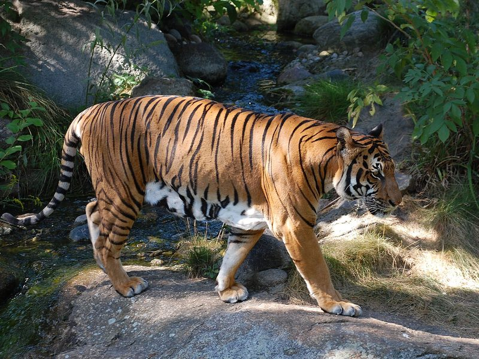
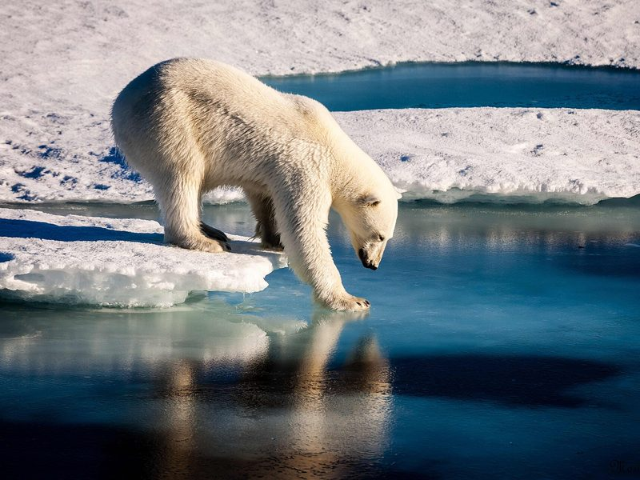
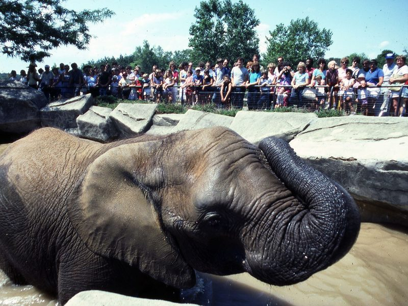
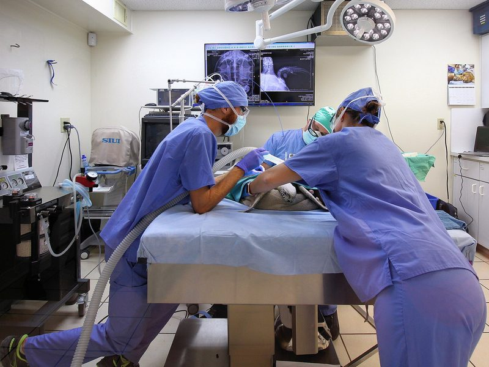
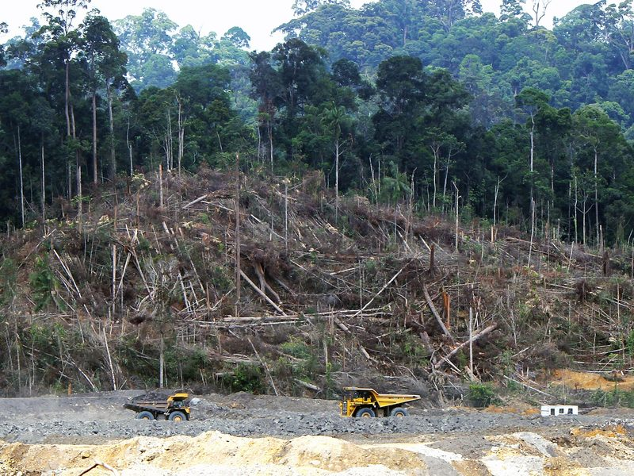
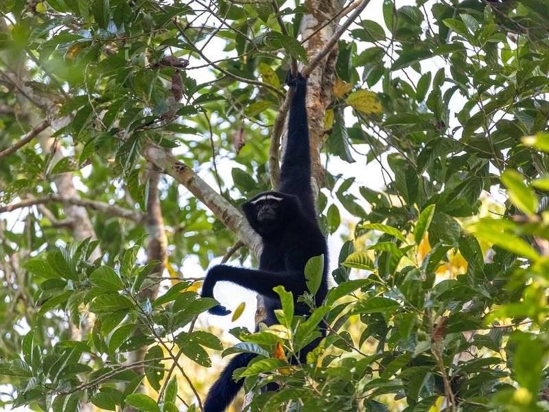

Name 60+ words and chunks for endangered animals, threats, zoos, conservation and time.
Explain when to use as and when to use like, and how compound adjectives such as a 12-hour shift are built.
Recognise word families such as danger → endanger → endangered and conserve → conservation → conservationist.
🛠️Apply · Analyse
Describe an animal, its habitat and the threats it faces, using parts of animals and compound adjectives.
Compare what zoos and rescue centres do with protecting animals in the wild.
Find main ideas, details and paraphrases in VSTEP reading and listening on wildlife and health.
💡Evaluate · Create
Give and defend an opinion on zoos and conservation with the 7-step frame.
Write a formal letter of complaint (≥ 120 words) and a problem–solution essay (≥ 250 words).
Value the link between wildlife, the environment and human health.
Lead-in 1 · Wildlife under threat — describe and react
3:00Choose two photos and compare them: which problem is more serious? Then answer the questions.

An Indochinese tiger
Question 1
"Describe the tiger and the place where it lives."
Question 2
"Why are tigers in danger, and how do you feel about it?"
Question 3
"Have you ever seen a tiger, in the wild or in a zoo? What was it like?"

Melting sea ice
Question 1
"What is the bear doing, and what problem does this photo show?"
Question 2
"Is climate change the biggest threat to creatures like this? Why? / Why not?"
Question 3
"Has the weather where you live changed since you were a child?"

A day at the zoo
Question 1
"Describe the enclosure. Does the elephant have enough space?"
Question 2
"What can children learn from a visit to the zoo?"
Question 3
"When did you last go to a zoo, and would you go again?"

At a rescue centre
Question 1
"What are the vets doing, and what might have happened to the turtle?"
Question 2
"In what ways is a wildlife vet's work like a doctor's, and how is it different?"
Question 3
"Would you spend a weekend as a volunteer at a rescue centre? Why? / Why not?"

A forest cut down
Question 1
"What has happened here, and why do people clear forests?"
Question 2
"What happens to the animals that lived in this forest?"
Question 3
"Are there still large forests in your home province? Are they protected?"

Life in the treetops
Question 1
"Describe the animal. Which parts of its body help it live in the trees?"
Question 2
"Why are so many primates in Vietnam now critically endangered?"
Question 3
"Should people be allowed to keep monkeys as pets? Why? / Why not?"
Lead-in 2 · Agree or disagree?
4:00Tap your view, then give one reason.
1 · Zoos are prisons for animals and should all be closed.
Model answer
I don't agree. Good zoos breed animals that have almost died out, and the Arabian oryx is back in the wild only because zoo-bred animals were released in Oman. Zoos with tiny concrete cages are a different story, and those should close.
2 · It's a waste of money to protect animals while so many people still need help.
Model answer
I partly agree, because district hospitals in the mountains still lack basic equipment. But a protected forest also gives people clean water and stops landslides, so it isn't really a choice between people and animals.
3 · Eating wild animals is a real danger to human health.
Model answer
I completely agree. SARS was linked to civets sold in live-animal markets, and most new infectious diseases in people come from animals. A restaurant that serves wild meat puts the whole community at risk, not just the people at the table.
4 · Doctors should tell patients openly that wildlife "remedies" such as rhino horn have no proven medical value.
Model answer
I agree. There's no reliable evidence that rhino horn cures anything, and patients who pay for fake cures sometimes put off the treatment they really need. If we stay quiet, we leave the field to the sellers.
5 · It doesn't really matter if a few species die out. It has always happened.
Model answer
I disagree. Species have always died out, but today it's happening much faster, and it's mostly our fault: hunting, pollution, cutting down forests. When one species disappears, the rest of the food chain feels it too.
6 · Busy doctors simply don't have time to help protect wildlife.
Model answer
That's partly true, especially after a 24-hour shift. Still, helping doesn't take much time. We can refuse wildlife products, sign a petition, or give a short talk at a local school from time to time.
Useful language
I completely agree / I partly agree / I don't agree at all, because …
It depends on whether …
There's no doubt that …
That may be true, but on the other hand …
Lead-in 3 · How many words do you have for each of the 4 groups?
4:00Type every English word or phrase you know, separated by commas.
Tougher laws have strengthened the penalties for traffickers.
PEOPLE & COMPOUND NOUNS
05NOUNS FOR PEOPLE👥
USE
‑ist: conservationist · zoologist · biologist
‑er / ‑or: poacher · trafficker · visitor
‑ian: vegetarian · physician · librarian
EXAMPLES
A poacher hunts animals illegally.
Every visitor pays an entrance fee.
My sister became a vegetarian after a visit to a bear farm.
06COMPOUND NOUNS🧱
USE
Two nouns, one idea: the first says what kind
One word: rainforest · wildlife · rainfall
Two words: habitat loss · animal welfare · wildlife trade
Read the gap: after a / the → noun · after be / look → adjective · after to / can → verb
EXAMPLES
Habitat loss is the main threat to primates in Vietnam.
Rainfall in Tam Đảo is heavy all summer.
4 · 10 functions · 30 chunks
1 · Describing animals and places
It's a kind of … with …
It's about the size of …
It lives mainly in …
The pangolin is a kind of mammal with hard scales all over its body. It's about the size of a large cat, and it lives mainly in forests.
2 · Comparing
It looks like …
It isn't as … as …
… is similar to …
From a distance, a curled-up pangolin looks like a pine cone. It isn't as slow as people think, and its diet is similar to an anteater's: ants and termites.
3 · Talking about causes
… because of …
… due to …
As a result of …, …
Langur numbers fell because of hunting. Many forests have gone due to farming, and as a result of this, the survivors live in tiny, separate groups.
4 · Giving examples
… such as … and …
… like …
For instance, …
Big predators such as tigers and leopards need huge areas. Smaller ones, like civets, cope better with farmland. For instance, they often hunt rats around villages.
5 · Expressing concern
I'm really worried about …
What concerns me most is …
It's alarming that …
What concerns me most is the online trade. It's alarming that anyone can order pangolin scales from a phone in a few minutes.
6 · Suggesting solutions
One solution would be to …
It would help if …
… should be + past participle
One solution would be to train more rangers. It would help if fines were much higher, and illegal wildlife markets should be closed for good.
7 · Formal complaint letter: opening and reason
Dear Sir or Madam,
I am writing to express my concern about …
I visited … on … with …
Dear Sir or Madam, I am writing to express my concern about the care of the elephants at your safari park. I visited the park on 8 November with a group of colleagues from our hospital.
8 · Formal letter: requests and closing
I would be grateful if you could …
I would appreciate it if …
I look forward to hearing from you. Yours faithfully,
I would be grateful if you could provide shade in the bear enclosure. I would also appreciate it if staff stopped visitors feeding the animals. I look forward to hearing from you.
9 · Essay: stating the problem
It is true that …
One of the main causes of … is …
For this reason, …
It is true that many species are in decline. One of the main causes of this is habitat loss. For this reason, protecting forests has to come first.
10 · Essay: proposing solutions and concluding
In this way, …
As for …, …
To sum up, …
Small reserves could be linked by forest corridors. In this way, animals could move and breed safely. As for the illegal trade, heavier fines would help. To sum up, both the forests and the markets need action.
5 · Upgrade your sentences: B2 → B2+
B2
B2+
Many animals will die soon.
Hundreds of species are at risk of extinction within our lifetime.
People cut the trees, so the animals have no home.
Deforestation has left many primates without a habitat.
People kill rhinos for their horns.
Rhinos are still poached for their horns, mostly to supply buyers in Asia.
I am a vet. I work at a rescue centre.
I work as a wildlife vet at a rescue centre in Ninh Bình.
The zoo is like a prison.
Critics regard small city zoos as little more than prisons.
The pangolin was very sick.
The pangolin looked weak and dehydrated, as if it hadn't eaten for days.
The shift was very long.
After a 12-hour shift, I could hardly keep my eyes open.
Animals for example tigers and bears are in danger.
Large mammals such as tigers and bears face extinction in Vietnam.
We must do something now.
It's high time the authorities cracked down on the online wildlife trade.
Zoos help animals.
Good zoos run breeding programmes and release animals back into the wild.
I sometimes go to the rescue centre.
From time to time, I spend a weekend as a volunteer at the bear centre in Tam Đảo.
Writing reports takes a lot of time.
Writing reports is time-consuming, so I make time for it every Friday afternoon.
6 · The answer frame — 7 steps
Sample question: "Should zoos still exist in the 21st century?"
1Point
Jobanswer the question directly
Ask yourselfWhat is my answer?
Yes, but only zoos that work like rescue centres and put conservation first.
2Why
Jobgive your main reason
Ask yourselfWhy do I think so?
For some animals, a well-run zoo is now the last safe place left.
3How
Jobexplain how that reason works in real life
Ask yourselfHow does it happen?
When a forest disappears, a healthy group bred in captivity keeps the species going until there's somewhere safe to release it.
4Example
Jobshow one real case: who, where, when
Ask yourselfWho or what proves it?
The primate centre at Cúc Phương, for instance, takes in langurs seized from traffickers, and visitors can watch the keepers at work.
5Result
Jobsay what happened in that case
Ask yourselfWhat changed?
My kids came out able to name three kinds of langur, which is more than most adults in Hà Nội can do.
6Limitation
Jobadmit the other side or a problem
Ask yourselfWhat is the weak point?
That said, plenty of city zoos still keep elephants and bears in small concrete enclosures, and that's hard to defend.
7Evaluation
Jobgive your final view in new words
Ask yourselfSo what do I think now?
So I'd keep zoos, but judge each one by what it does for animals in the wild, not by how many tickets it sells.
Where to use it
Part 1: three steps, Point → Why → Example, in about 30 seconds.
Part 2: all 7 steps in 3 minutes: Why + How for box 1, Example + Result for box 2, Limitation for box 3, then your own idea in the Evaluation.
Part 3: all 7 steps in about a minute, one short sentence per step.
Exercise 19 (choosing 1 of 3 Wildlife Day activities): all 7 steps; the Limitation explains why the other two activities are weaker.
Essay: each body paragraph = Point → Why → How → Example → Result; Limitation + Evaluation go in the last body paragraph and the conclusion.
7 · 12 common mistakes
Mistake
Correction
Remember
My cousin works like a doctor in Hải Phòng.
My cousin works as a doctor in Hải Phòng.
A real profession → as. work like a doctor = in the way a doctor works, but he isn't one.
The keeper looks like worried about the bear.
The keeper looks worried about the bear.
look · sound · feel + adjective: no like.
Big cats, such as for example tigers, need a lot of space.
Big cats, such as tigers, need a lot of space.
Use such as or for example, never both.
I've just finished a 12-hours shift.
I've just finished a 12-hour shift.
Number + noun before another noun: singular, with a hyphen.
The saola is a very rare specie.
The saola is a very rare species.
species is the same in the singular and the plural.
Many frogs may become extincted soon.
Many frogs may become extinct soon.
extinct is an adjective; there is no verb extinct.
I spend an hour every night to read journals.
I spend an hour every night reading journals.
spend + time + ‑ing, not to + verb.
It's high time we start protecting the forest.
It's high time we started protecting the forest.
It's high time + past tense, with a present meaning.
Many people regard zoos like prisons.
Many people regard zoos as prisons.
regard · see · describe · refer to … as.
My rota is the same like yours.
My rota is the same as yours.
the same as · similar to · or like on its own.
The red panda is a dangered species.
The red panda is an endangered species.
danger → endanger → endangered; there is no word dangered.
In the same time, we must reduce the demand for wildlife products.
At the same time, we must reduce the demand for wildlife products.
at the same time = also / together; never in the same time.
Scan for names, dates and numbers. Check marks your answers; Show answers gives the key and the evidence.
0 exercises checked
1 · Reading A · Noah's ark or prison?
Skim each paragraph for its main point, then find the key words of each question in the text.
Passage | Questions
Noah's ark or prison?
1For some people, a zoo is a modern Noah's ark, a safe place where rare animals can survive while their homes are destroyed. For others, it is little more than a prison with a ticket office and a gift shop. Both pictures contain some truth, and the real question is not whether zoos are good or bad, but what they can and cannot do for animals facing extinction.Q1
2The strongest case for zoos rests on a few species that would no longer exist without them. The Arabian oryx, a white desert antelope with long straight horns, was hunted to extinction in the wild by 1972. Luckily, a small number had already been taken into captivity, and from 1982, oryx bred in zoos were released back into the deserts of Oman.Q2 Przewalski's horse tells a similar story: it had disappeared from the wild by the late 1960s, and since 1992 it has been reintroduced to the grasslands of Mongolia.
3Perhaps the boldest rescue was that of the California condor, North America's largest bird. By 1987 only 27 condors were left, and scientists took the difficult decision to capture every one of them.Q3 Some people protested that the species should be allowed to die out in peace. In the end, the gamble paid off: today there are more than 500 condors, and over half of them fly free.Q4
4More recently, the scimitar-horned oryx, declared extinct in the wild in 2000, has been released in Chad since 2016, again using animals bred in captivity. These programmes also show that breeding animals is only half the job. A species can only go home if its habitat is still there and the hunting that pushed it to the edge has been brought under control.Q5
5Critics, however, raise serious objections. Most animals in zoos are not endangered at all; they are there because visitors like to see them.Q6Large animals that roam over long distances in the wild, such as elephants and polar bears, often suffer in small enclosures, and many show repetitive behaviour, walking the same path or swaying their heads for hours.Q7Some conservationists also argue that the money spent on keeping a few animals in captivity would protect far more species if it were used to protect their habitats.Q8
6A good zoo, then, is best seen as a lifeboat: it can keep a species afloat for a while, but no animal should have to live in it forever.Q9 The best zoos breed endangered species, return them to the wild where possible and spend part of every entrance fee on conservation in the field. They work as a back-up, not a replacement for wild habitats, and they are only worth supporting if the world outside their walls is protected too.Q10
1What is the passage mainly about?
1What is the passage mainly about?
Paragraph 1 says the real question is “what they can and cannot do for animals facing extinction”. Paragraphs 2–4 give the successes, paragraph 5 the criticism and paragraph 6 the writer's view. The condor is only one example.Clue: Main-idea question: read paragraph 1 and the first sentence of each paragraph.
In the text:Both pictures contain some truth, and the real question is not whether zoos are good or bad, but what they can and cannot do for animals facing extinction.
2According to paragraph 2, what happened to the Arabian oryx from 1982?
2According to paragraph 2, what happened to the Arabian oryx from 1982?
“from 1982, oryx bred in zoos were released back into the deserts of Oman.” 1972 is when it was hunted to extinction in the wild; Mongolia is where Przewalski's horse was returned. A small number had been taken into captivity earlier; the text does not say the last wild herd was moved in 1982.Clue: Find 1982 in paragraph 2.
In the text:from 1982, oryx bred in zoos were released back into the deserts of Oman.
3The word them in paragraph 3 refers to
3The word them in paragraph 3 refers to
“By 1987 only 27 condors were left, and scientists took the difficult decision to capture every one of them”: the 27 birds alive then. The scientists made the choice; they did not capture themselves. The birds flying free today came later, from breeding.Clue: Reference: whom did the scientists decide to capture?
In the text:By 1987 only 27 condors were left, and scientists took the difficult decision to capture every one of them.
4The phrase paid off in paragraph 3 is closest in meaning to
4The phrase paid off in paragraph 3 is closest in meaning to
“the gamble paid off: today there are more than 500 condors.” The number grew, so the plan succeeded. Nothing is said about money.Clue: Vocabulary in context: what happened after the risky decision?
In the text:In the end, the gamble paid off: today there are more than 500 condors, and over half of them fly free.
5What does the writer mean by “breeding animals is only half the job” in paragraph 4?
5What does the writer mean by “breeding animals is only half the job” in paragraph 4?
Breeding is “only half the job” because “a species can only go home if its habitat is still there and the hunting … has been brought under control.” “Half” is not a number of animals, and the text gives no death rate or time.Clue: Read the sentence that follows: “A species can only go home if …”.
In the text:breeding animals is only half the job. A species can only go home if its habitat is still there and the hunting that pushed it to the edge has been brought under control.
6According to paragraph 5, what is true of most animals in zoos?
6According to paragraph 5, what is true of most animals in zoos?
“Most animals in zoos are not endangered at all; they are there because visitors like to see them.” So their species are not at risk. The text never says where the zoo animals came from. Breeding programmes are for the few rare species, not for most animals.Clue: Paragraph 5, first objection.
In the text:Most animals in zoos are not endangered at all; they are there because visitors like to see them.
7What can be inferred about elephants and polar bears from paragraph 5?
7What can be inferred about elephants and polar bears from paragraph 5?
Elephants and polar bears “often suffer in small enclosures” and show repetitive behaviour, so zoos cannot easily give them the space they need. The text does not say they are no longer kept.Clue: Inference: animals that “roam over long distances” live in “small enclosures”.
In the text:Large animals that roam over long distances in the wild, such as elephants and polar bears, often suffer in small enclosures, and many show repetitive behaviour, walking the same path or swaying their heads for hours.
8According to some conservationists, how could zoo money do more good?
8According to some conservationists, how could zoo money do more good?
The money “would protect far more species if it were used to protect their habitats.” More breeding or bigger enclosures would still spend it on animals in captivity, and the text says nothing about cheaper tickets.Clue: Find “Some conservationists also argue …”.
In the text:Some conservationists also argue that the money spent on keeping a few animals in captivity would protect far more species if it were used to protect their habitats.
9Why does the writer compare a good zoo to a lifeboat?
9Why does the writer compare a good zoo to a lifeboat?
A lifeboat “can keep a species afloat for a while, but no animal should have to live in it forever”: a short-term rescue, not a home. The writer does not say zoos are the safest home or that they are full.Clue: Purpose: what does a lifeboat do, and for how long?
In the text:A good zoo, then, is best seen as a lifeboat: it can keep a species afloat for a while, but no animal should have to live in it forever.
10What is the writer's attitude to zoos?
10What is the writer's attitude to zoos?
Good zoos “work as a back-up, not a replacement for wild habitats, and they are only worth supporting if the world outside their walls is protected too.” That is a real but limited role. The prison view belongs to critics, and the writer never calls zoos the best hope. Some conservationists want the money spent on habitats, but the writer still supports good zoos.Clue: Writer's attitude: the last sentence of the passage.
In the text:They work as a back-up, not a replacement for wild habitats, and they are only worth supporting if the world outside their walls is protected too.
2 · Reading B · The hidden cost of the wildlife trade
Passage | Questions
The hidden cost of the wildlife trade
1When we think about the illegal wildlife trade, we usually picture its victims: elephants killed for their ivory, rhinos for their horns, pangolins for their scales. We think much less often about the risk it creates for our own health, yet doctors and scientists increasingly see the two problems as one.Q1
2About 60% of the infectious diseases known to affect humans can pass to us from animalsQ2, and these diseases are called zoonoses. Among new diseases the figure is even higher: about three quarters come from animals. The risk grows wherever wild animals are caught, transported and sold, because stressed, sick animals of different species are often crammed into cages next to each other and next to the people who handle them.Q3,Q4 The SARS outbreak of 2002–2003 was linked to civets sold in live-animal markets in southern China.
3No animal shows the scale of the trade better than the pangolin, a shy, ant-eating mammal covered in hard scales, which is widely described as the most trafficked mammal in the world. Its meat is sold as a luxury food in some countries, and its scales are dried and ground into powder for traditional remedies. It is this demand, far more than the loss of forests, that has pushed several pangolin species towards extinction.Q5 International commercial trade in all eight species has been banned since 2017, but smuggling continues on a huge scale.
4The medical claims behind the trade do not survive close inspection. Rhino horn is made of keratin, the same protein as human hair and fingernails, and has no proven medical valueQ6; pangolin scales are made of keratin too. Yet the belief that these products can bring down a fever, or even cure cancer, remains strong enough to keep traffickers in business.
5Governments are starting to act. In July 2020, Vietnam's Prime Minister issued a directive to tighten control of the wildlife trade and of wildlife marketsQ7, at a time when the world was struggling with COVID-19. Many experts now support a One Health approach, which treats human, animal and environmental health as closely linked, so that vets, doctors and ecologists work on the same problems together.Q8
6Doctors have their own part to play, and it often begins in the consulting room. Patients sometimes ask whether a powder made from rhino horn or pangolin scales might help a sick relative, and a doctor who calmly explains the evidence may do more to reduce demand than any poster campaign.Q9Protecting wildlife, in other words, is not only about saving animals; it is also one of the ways we protect ourselves.Q10
1What is the passage mainly about?
1What is the passage mainly about?
We rarely think “about the risk it creates for our own health, yet doctors and scientists increasingly see the two problems as one.” Pangolins are one example inside this topic, and doctors' training is not discussed.Clue: Main-idea question: paragraph 1 ends with the writer's focus.
In the text:We think much less often about the risk it creates for our own health, yet doctors and scientists increasingly see the two problems as one.
2What does ‘60%’ in paragraph 2 refer to?
2What does ‘60%’ in paragraph 2 refer to?
“About 60% of the infectious diseases known to affect humans can pass to us from animals.” For new diseases the figure is about three quarters, not 60%.Clue: Find 60% and read the whole sentence; then compare it with the next sentence.
In the text:About 60% of the infectious diseases known to affect humans can pass to us from animals
3The word crammed in paragraph 2 is closest in meaning to
3The word crammed in paragraph 2 is closest in meaning to
Animals of different species are “crammed into cages next to each other”, so they are squeezed in tightly, which helps disease spread. They are not sorted by type: the text says “different species” share the cages.Clue: Vocabulary in context: many animals “into cages next to each other”.
In the text:stressed, sick animals of different species are often crammed into cages next to each other and next to the people who handle them.
4According to paragraph 2, which is NOT given as a reason why disease spreads in the wildlife trade?
4According to paragraph 2, which is NOT given as a reason why disease spreads in the wildlife trade?
The text gives three reasons: the animals are “stressed, sick”, “of different species” in cages “next to each other”, and “next to the people who handle them”. The people who handle them are the traders moving and selling them. Nothing is said about giving the animals drugs.Clue: NOT question: list the reasons in paragraph 2, then find the one that is missing.
In the text:stressed, sick animals of different species are often crammed into cages next to each other and next to the people who handle them.
5The phrase this demand in paragraph 3 refers to
5The phrase this demand in paragraph 3 refers to
“Its meat is sold as a luxury food … and its scales are … ground into powder for traditional remedies”. This demand = buyers wanting pangolins for food and medicine. The text says this demand matters “far more than the loss of forests”, so the forests are not the answer.Clue: Reference: what is sold as food and as powder just before this demand?
In the text:Its meat is sold as a luxury food in some countries, and its scales are dried and ground into powder for traditional remedies. It is this demand, far more than the loss of forests, that has pushed several pangolin species towards extinction.
6Why does the writer mention human hair and fingernails in paragraph 4?
6Why does the writer mention human hair and fingernails in paragraph 4?
Rhino horn is “the same protein as human hair and fingernails, and has no proven medical value.” The comparison shows it is nothing special as medicine. The text does not explain how the horn is processed or what it costs.Clue: Purpose: what do hair and fingernails have in common with rhino horn?
In the text:Rhino horn is made of keratin, the same protein as human hair and fingernails, and has no proven medical value
7What did Vietnam's Prime Minister do in July 2020?
7What did Vietnam's Prime Minister do in July 2020?
“Vietnam's Prime Minister issued a directive to tighten control of the wildlife trade and of wildlife markets.” Tightening control is not the same as closing every market for good.Clue: Find July 2020 in paragraph 5.
In the text:In July 2020, Vietnam's Prime Minister issued a directive to tighten control of the wildlife trade and of wildlife markets
8According to paragraph 5, what is the One Health approach?
8According to paragraph 5, what is the One Health approach?
One Health “treats human, animal and environmental health as closely linked, so that vets, doctors and ecologists work on the same problems together.” Doctors and vets work side by side; doctors are not trained to treat animals.Clue: “a One Health approach, which …”.
In the text:which treats human, animal and environmental health as closely linked, so that vets, doctors and ecologists work on the same problems together.
9What can be inferred from paragraph 6?
9What can be inferred from paragraph 6?
“a doctor who calmly explains the evidence may do more to reduce demand than any poster campaign.” So doctors may help cut demand. Patients still ask, so not all of them know the remedies fail.Clue: Inference: what can a doctor's explanation do “more than any poster campaign”?
In the text:Patients sometimes ask whether a powder made from rhino horn or pangolin scales might help a sick relative, and a doctor who calmly explains the evidence may do more to reduce demand than any poster campaign.
10What is the writer's main message in the last paragraph?
10What is the writer's main message in the last paragraph?
“Protecting wildlife … is not only about saving animals; it is also one of the ways we protect ourselves.” The writer puts the two together and does not rank animals above people. Governments appear in paragraph 5, not in the last one.Clue: The last sentence: “in other words …”.
In the text:Protecting wildlife, in other words, is not only about saving animals; it is also one of the ways we protect ourselves.
3 · After reading · Talk about it
Answer with the 7-step frame: Point → Why → How → Example → Result → Limitation → Evaluation.
1 · Should rescued wild animals always be released back into the wild?
Model answer
PointPersonally, I think they should go back to the forest whenever they can survive on their own, but for some animals that day never comes. WhyAn animal that can't find food or keep away from people will simply die once it leaves the cage. HowBefore a release, keepers check whether the animal can climb, find its own food and avoid humans, and the ones that fail stay in captivity. ExampleAt the bear sanctuary in Tam Đảo, for example, most of the moon bears spent years in tiny cages on bile farms, and some lost a paw in a snare. ResultNone of them could cope in the forest now, so the sanctuary gives them trees, pools and space for the rest of their lives. LimitationThe downside is that this costs money every single year, and a bear in a sanctuary can live for decades. EvaluationOn balance, freedom should be the goal, but for animals like these a safe, roomy home is the kinder choice.
2 · Should doctors talk to patients about wildlife “remedies”?
Model answer
PointYes, in my view it's part of our job. WhyPatients tend to trust their doctor far more than a seller at the market. HowOnce we explain what rhino horn or pangolin scales are actually made of, the miracle cure stops looking like medicine. ExampleLast year, for instance, the son of one of my patients on the oncology ward asked me quietly whether he should buy rhino horn powder for his father. ResultI told him it was the same stuff as his own fingernails, and he spent the money on his father's treatment instead. LimitationOf course, some families have made up their minds long before they reach us, and a ten-minute talk won't change that. EvaluationStill, every family that stops buying takes a little money away from the illegal wildlife trade.
3 · Should zoos keep animals that are not endangered?
Model answer
PointTo be honest, I think they can, as long as each animal is there for a good reason and has enough space. WhyChildren don't need a rare animal to fall in love with wildlife; an ordinary one does the job just as well. HowClose contact with a live animal turns curiosity into questions, and those questions lead on to the species that really are endangered. ExampleLast summer, for example, I took my nephew to a small farm park on the edge of Hà Nội, where the animals were just goats, rabbits and peacocks. ResultHe stayed by the goat pen for an hour, and on the way home he asked me which animals in Vietnam were at risk of extinction. LimitationOn the other hand, every keeper and every enclosure spent on goats and peacocks is money that a breeding programme for a species close to extinction badly needs. EvaluationAll in all, common animals have a place in a zoo, but the space and the money should go first to the species that need help most.
4 · What can ordinary people do to help stop the illegal wildlife trade?
Model answer
PointI'd say one of the most useful things is to report the people who sell wildlife online. WhyA lot of the illegal wildlife trade has moved onto social media, where one seller can reach thousands of buyers in an evening. HowA screenshot and a link give the authorities something concrete to follow up, and the platform can take the page down. ExampleLast spring, for example, a nurse on our ward found a Facebook group selling baby turtles and sent the posts to the free wildlife crime hotline run by ENV, a conservation group in Hà Nội. ResultA few weeks later the group had gone, and the whole report had taken her less time than a coffee break. LimitationTrue, a new page often appears as soon as an old one closes, and the police still need to crack down on the big traffickers. EvaluationEven so, every report makes selling a little riskier, and if enough of us do it, the online market will slowly shrink.
Sheet 6 / 11 · VSTEP Listening format · 3 parts · 13 questions
Listening
Read the questions first, then press ▶ Play. Show answers opens the transcript, the key and the evidence.
0 exercises checked
Part 1 · Announcements, messages and news about wildlife
Audio + transcript | Questions
1Played 0×
The transcript appears after you press Show answers.
Transcript
Good morning, and welcome to the City Zoo. Because of today's heat, we've made a change to the programme. The elephant talk will now take place at 2.30 this afternoon instead of 11.00, so that the elephants can stay in the shade during the hottest part of the day.Q1 A free shuttle bus runs from the main gate to the elephant house every 20 minutes. And please remember not to feed any of the animals. Enjoy your visit.
2Played 0×
The transcript appears after you press Show answers.
Transcript
Hello, this is a message for Dr Phuong. It's Tom, the volunteer coordinator at the wildlife rescue centre. Your first day is this Saturday, starting at eight. Please wear long trousers and closed shoes; we'll give you gloves when you arrive. One important rule: you mustn't touch or feed any of the animals unless a keeper asks you to. And could you bring a copy of your vaccination record? We need it before you can work near the animals.Q2 See you on Saturday.
3Played 0×
The transcript appears after you press Show answers.
Transcript
And finally, some good news from the mountains of central Vietnam. For the first time in ten years, a camera trap in a national park has filmed a family of Asian golden cats: a mother and two young ones. Rangers say it's a clear sign that the anti-poaching patrols are workingQ3, after years of removing snares from the forest. The park now plans to set up more cameras to find out how many of the cats are living there.
4Played 0×
The transcript appears after you press Show answers.
Transcript
Hi Quan, it's Trang. Just a reminder about the department trip to Cúc Phương this weekend. The coach leaves at 6.15 on Saturday morning from the hospital gate, not from the car park like last timeQ4, so please don't be late. It's about a three-hour drive, so we should arrive by half past nine, in time for the primate centre. Oh, and bring insect repellent. The mosquitoes in the forest are terrible at this time of year. See you Saturday!
1What does the announcement say about the elephant talk?
1What does the announcement say about the elephant talk?
“The elephant talk will now take place at 2.30 this afternoon instead of 11.00, so that the elephants can stay in the shade during the hottest part of the day.” The bus, not the talk, runs every 20 minutes.Clue: Listen for the new time and the reason.
In the text:The elephant talk will now take place at 2.30 this afternoon instead of 11.00, so that the elephants can stay in the shade during the hottest part of the day.
2What does Tom ask Dr Phuong to bring?
2What does Tom ask Dr Phuong to bring?
“could you bring a copy of your vaccination record?” Gloves are given to volunteers when they arrive, and volunteers must not feed the animals.Clue: A request: “could you bring …?”
In the text:And could you bring a copy of your vaccination record? We need it before you can work near the animals.
3According to the rangers, what does the video show?
3According to the rangers, what does the video show?
“Rangers say it's a clear sign that the anti-poaching patrols are working.” The patrols protect the cats; they have not driven them away, and nothing suggests the patrols can stop. It is the first sighting in ten years, and the park still needs more cameras to count them, so the cats are not easy to find.Clue: Listen for “Rangers say …”.
In the text:Rangers say it's a clear sign that the anti-poaching patrols are working
4When and where does the coach leave?
4When and where does the coach leave?
“The coach leaves at 6.15 on Saturday morning from the hospital gate, not from the car park like last time.” Half past nine is when they arrive, and the time is 6.15 (fifteen), not 6.50 (fifty).Clue: Two details: a time and a place. Note “not from the car park”.
In the text:The coach leaves at 6.15 on Saturday morning from the hospital gate, not from the car park like last time
Part 2 · Conversation: a city zoo or a rescue centre?
Audio + transcript | Questions
Played 0×
The transcript appears after you press Show answers.
Transcript
MinhThu, are you doing anything with the kids this weekend? I promised mine a day out, and I'm running out of ideas.
ThuFunny you should ask. I was thinking of driving out to the primate rescue centre in the national park. Do you want to come?
MinhI was going to suggest the city zoo, actually. It's only twenty minutes away, and the kids could see the tigers.
ThuI took the girls there last year, and honestly, I didn't enjoy it. The bears were in tiny concrete cages, and one of them just walked up and down the whole time. I felt awful.Q5
MinhFair enough. But my youngest is only four. I'm not sure he'll manage a long walk in the forest, or stay interested for a whole morning.Q6
ThuThe tour only takes about an hour, and the path's flat. And the guides are great with children. They explain where each monkey came from, why it was rescued, and how they teach it to find food before it goes back to the forest.Q7
MinhAll right, you've convinced me. The zoo can wait. I'll book the tour online tonight, for Sunday morning, so we miss the Saturday crowds.Q8
ThuPerfect. And I'll drive.
5Why doesn't Thu want to go to the city zoo?
5Why doesn't Thu want to go to the city zoo?
“The bears were in tiny concrete cages, and one of them just walked up and down the whole time. I felt awful.” The zoo is only twenty minutes away. Minh mentions the tigers as a reason to go; Thu never says her girls were scared.Clue: Thu: “honestly, I didn't enjoy it”.
In the text:I took the girls there last year, and honestly, I didn't enjoy it. The bears were in tiny concrete cages, and one of them just walked up and down the whole time. I felt awful.
6What worries Minh about the rescue centre?
6What worries Minh about the rescue centre?
“I'm not sure he'll manage a long walk in the forest, or stay interested for a whole morning.” He thinks the visit may be too much for a four-year-old. He does not mention danger, big animals or cost.Clue: Minh: “But my youngest is only four.”
In the text:But my youngest is only four. I'm not sure he'll manage a long walk in the forest, or stay interested for a whole morning.
7According to Thu, what do the guides explain about each monkey?
7According to Thu, what do the guides explain about each monkey?
The guides explain “how they teach it to find food before it goes back to the forest”. Feeding by visitors is not mentioned, and the centre prepares monkeys for the forest, not for homes.Clue: Thu: “They explain …”.
In the text:They explain where each monkey came from, why it was rescued, and how they teach it to find food before it goes back to the forest.
8What does Minh offer to do?
8What does Minh offer to do?
“I'll book the tour online tonight, for Sunday morning, so we miss the Saturday crowds.” Thu says she will drive.Clue: Minh: “I'll …” is an offer.
In the text:I'll book the tour online tonight, for Sunday morning, so we miss the Saturday crowds.
Part 3 · Talk: a wildlife vet at a pangolin rescue centre
Audio + transcript | Questions
Played 0×
The transcript appears after you press Show answers.
Transcript
Good morning, everyone, and welcome to the centre. I'm Dr Mai Anh, one of the two vets here. You'll spend your careers treating people, not pangolins, but I hope you'll see why our work matters to you too.
Almost all the pangolins we receive have been taken from traffickers by the police or the forest rangers. Some have injuries from snares, but the biggest problem is that they arrive badly dehydrated and extremely stressed.Q9 Many have spent days in a sack without water. So first we give them fluids, keep them warm and leave them somewhere quiet and dark.
After that, every new arrival goes into quarantine for several weeks, well away from the other animals.Q10 One sick animal could spread disease through the whole centre.
You'll notice that all the staff wear gloves and masks. That's not because pangolins bite. They don't even have teeth. It's because some diseases can pass between animals and people.Q11 That's what we mean by One Health: the health of people, animals and the environment are all connected.
Visitors often ask why they can't see more of the animals. The answer is simple: our aim is to release them, not to put them on display. An animal that gets used to people is much less likely to survive in the forest.Q12
Finally, what can you do as doctors? Some of your patients will ask whether pangolin scales or rhino horn can cure their illness. Please tell them the truth.Q13 There's no evidence that these products work, and coming from a doctor, that message carries real weight. Right, let's go and meet some of our patients.
9What is the main problem for most pangolins when they arrive?
9What is the main problem for most pangolins when they arrive?
“Some have injuries from snares, but the biggest problem is that they arrive badly dehydrated and extremely stressed.” Injuries affect only some of them. Keeping them warm is part of first care; she never says they arrive cold.Clue: “but the biggest problem is …”.
In the text:Some have injuries from snares, but the biggest problem is that they arrive badly dehydrated and extremely stressed.
10What happens to every new arrival after its first care?
10What happens to every new arrival after its first care?
“every new arrival goes into quarantine for several weeks, well away from the other animals.” Quarantine = keeping an animal apart to check for disease. Display is never the aim, and release comes much later.Clue: “After that, every new arrival …”.
In the text:After that, every new arrival goes into quarantine for several weeks, well away from the other animals.
11Why do the staff wear gloves and masks?
11Why do the staff wear gloves and masks?
“That's not because pangolins bite. They don't even have teeth. It's because some diseases can pass between animals and people.” Biting is ruled out, and she says nothing about chemicals or smells.Clue: “That's not because … It's because …”.
In the text:That's not because pangolins bite. They don't even have teeth. It's because some diseases can pass between animals and people.
12Why can't visitors see most of the animals?
12Why can't visitors see most of the animals?
“our aim is to release them, not to put them on display. An animal that gets used to people is much less likely to survive in the forest.” Time with people would hurt their chances once they are back in the forest. Quarantine is only for new arrivals, so it does not explain why most animals are hidden.Clue: “The answer is simple: …”.
In the text:The answer is simple: our aim is to release them, not to put them on display. An animal that gets used to people is much less likely to survive in the forest.
13What does Dr Mai Anh ask the students to do?
13What does Dr Mai Anh ask the students to do?
“Some of your patients will ask whether pangolin scales or rhino horn can cure their illness. Please tell them the truth.” She does not ask them to volunteer or to contact the police.Clue: Signal: “what can you do as doctors?”
In the text:Some of your patients will ask whether pangolin scales or rhino horn can cure their illness. Please tell them the truth.
Sheet 7 / 11 · VSTEP Speaking · 12 minutes
Speaking
Part 1 Social interaction 3' · Part 2 Topic development 5' · Part 3 Extended questions 4'.
In the model answers:
PointWhy … (coloured tags) = the steps of the answer frame: Point, Why, How, Example, Result, Limitation, Evaluation
frame language = phrases that give an opinion, a reason, an example, a contrast or a conclusion
unit vocabulary = words and chunks from Groups 1–4 of Sheet 3
Part 1 · Social interaction (3') — 3 topics, 10 questions
0:30Answer = Point → Why → Example
Record practice — Part 1
Topic 1Let's talk about animals and pets.
1 · Do you have a pet, or did you have one as a child?
PointWhen I was a child, we had …WhyWe got her because …, but she ended up as …ExampleI remember, for example, …
Model answer
PointWhen I was a child, we had a short-haired black dog called Mực. WhyWe got her because my father wanted a guard dog, but she ended up as my best friend. ExampleI remember, for example, she waited at the gate every afternoon until I got home from school, and then followed me round the house like a shadow.
2 · What's your favourite animal, and why?
PointI'd say my favourite animal is …WhyThat's because …ExampleI once watched …, for example, where …
Model answer
PointI'd say my favourite animal is the elephant. WhyThat's because elephants are clever and gentle, and they look after each other a bit like a big family. ExampleI once watched a documentary, for example, where the whole herd slowed down for hours so that an injured calf could keep up.
3 · Are pets popular in Vietnam these days?
PointYes, much more than …WhyThat's because …ExampleIn my building, for example, …
Model answer
PointYes, much more than when I was young, especially in big cities like Hà Nội. WhyThat's because more people are well-off now, and a lot of young people live alone and want some company. ExampleIn my building, for example, almost every floor has a cat or a small dog, and the pet clinic downstairs is busier than some of our outpatient rooms.
4 · Would you like to see wild animals in their natural habitat?
PointYes, I'd love to see … in the wild.WhyThe main reason is that …ExampleA colleague of mine, for example, …
Model answer
PointYes, I'd love to see gibbons in the wild. WhyThe main reason is that an animal in a cage isn't really the same animal; it doesn't move or call the way it should. ExampleA colleague of mine, for example, went to Cát Tiên National Park last spring, got up at four in the morning and heard gibbons singing in the forest. She said the trip was worth every penny.
Topic 2Let's talk about zoos and parks.
5 · When did you last go to a zoo?
PointThe last time was …, when I took …WhyThat's because …ExampleI remember, for example, …
Model answer
PointThe last time was about two years ago, when I took my son to the zoo in Thủ Lệ Park. WhyThat's because he was crazy about tigers at the time and talked about nothing else. ExampleI remember, for example, he stood at the tiger enclosure for half an hour, and the tiger just slept in the corner the whole time. He was so disappointed!
6 · Do you think children learn much from going to the zoo?
PointI think they learn something, but …WhyThat's because …ExampleMy daughter, for example, …
Model answer
PointI think they learn something, but less than their parents hope. WhyThat's because most children just run from one cage to the next, looking for the funniest animal. ExampleMy daughter, for example, still remembers a monkey stealing a man's ice cream, but she couldn't tell you which country monkeys like that come from.
7 · Have you ever visited a national park in Vietnam?
PointYes, I've been to … several times.WhyIt's only …, so …ExampleOn my last trip, for example, …
Model answer
PointYes, I've been to Ba Vì several times. WhyIt's only a 90-minute drive from Hà Nội, so it's perfect for a day away from the hospital. ExampleOn my last trip, for example, we climbed up to the temple at the top, and the whole valley below us was under cloud.
Topic 3Let's talk about time.
8 · How do you usually spend your free time?
PointTo be honest, I spend most of my free time …WhyThat's because …ExampleLast Sunday, for example, …
Model answer
PointTo be honest, I spend most of my free time with my kids. WhyThat's because I do a lot of night shifts, so the hours I get with them feel precious. ExampleLast Sunday, for example, we spent the whole afternoon flying a kite by West Lake, and I didn't check my phone once.
9 · Do you ever feel that you waste time?
PointYes, …, mostly …WhyThat's because after …, I …ExampleLast week, for example, I planned to …, but …
Model answer
PointYes, from time to time, mostly on my phone. WhyThat's because after a 24-hour shift I'm too tired to do anything useful, so I just scroll. ExampleLast week, for example, I planned to read a journal article, but I killed a whole hour watching cat videos instead.
10 · When did you last take time off work?
PointThe last time I took time off was …WhyThat's because …ExampleThis year, for example, I …, and …
Model answer
PointThe last time I took time off was at Tết, for five days. WhyThat's because our department can only let a few doctors go at a time, so we take turns. ExampleThis year, for example, I went back to my parents' house in Nam Định, and the five days went by in no time.
Practise 1
Choose 2 questions and write your answers in 3 steps: Point → Why → Example
Part 2 · Topic development (5') — speak from the diagram
You will have a long turn to talk on the following topic. Use the ideas in the diagram and your own ideas.
Card AZoos do more good than harm.
🦒🏞️Zoos
👧📚Education for children
🐒🍼Breeding endangered species
💡✏️Your own ideas
🐾❤️Animal welfare
PointIn my view, good zoos and rescue centres … I'll talk about …, … and …, and then add an idea of my own.WhyLet's start with education. Most children … will never see … in the wild, and …HowWhen they stand in front of … and watch …, the questions start: …?ExampleThe second point is breeding. Take …, for example. It runs a breeding programme for …ResultAs a result, I left feeling that …LimitationThat said, animal welfare is the weak spot. In some …, big animals …EvaluationMy own idea is that … So, all in all, …, as long as they work as …
Model answer — Topic A (≈ 240 words, 2–3 minutes)
PointI'm going to talk about zoos. In my view, good zoos and rescue centres do more good than harm, and the word “good” matters. I'll talk about education for children, breeding endangered species and animal welfare, and then add an idea of my own. WhyLet's start with education. Most children in Hà Nội will never see a tiger in the wild, and a living animal stays in their memory far longer than a picture. HowWhen they stand in front of an enclosure and watch an animal eat or play, the questions start: where does it live, and why are there so few left? ExampleThe second point is breeding. Take the primate rescue centre in Cúc Phương, for example. It runs a breeding programme for langurs close to extinction, and last spring a keeper told us one kind has only a few hundred left in the wild. ResultAs a result, I left feeling that places like that are an insurance policy for animals that could die out in our lifetime. LimitationThat said, animal welfare is the weak spot. In some city zoos, big animals spend their lives in small concrete enclosures, walking up and down like prisoners. EvaluationMy own idea is that the entrance fee should pay for bigger spaces, not more animals. So, all in all, zoos do more good than harm, as long as they work as rescue and breeding centres first.
3 boxes + your own ideas · 7 steps
Look again
I'll talk about education for children, breeding endangered species and animal welfare, and then add an idea of my own. — one sentence that maps the diagram
When they stand in front of an enclosure and watch an animal eat or play, the questions start … — the How step: how a visit actually teaches
Take the primate rescue centre in Cúc Phương, for example. … last spring a keeper told us … — a real place, a time and a person
walking up and down like prisoners · as long as they work as rescue and breeding centres — like + noun = similar to; as + noun = in the role of
That said, animal welfare is the weak spot. … My own idea is that … — box 3 becomes the Limitation, and your own idea answers it
Card BEveryone can help protect endangered animals.
🐘🛡️Protecting wildlife
🚫🛍️Not buying wildlife products
🤝🌳Supporting conservation groups
💡✏️Your own ideas
📣📱Spreading awareness
PointI strongly believe everyone can help, even people who … I'll cover …, … and …, and then …WhyFirst of all, the simplest thing anyone can do is … Poachers only …HowEvery … that nobody buys means …, and when …, there's less reason to …ExampleSecondly, you can support conservation groups. My …, for example, sponsors …ResultAs a result, …LimitationTo be fair, spreading awareness online can feel … You share a post, …EvaluationMy own idea is that … works better …, from someone people trust, like … So, on balance, …
Model answer — Topic B (≈ 230 words, 2–3 minutes)
PointI'm going to talk about protecting endangered animals. I strongly believe everyone can help, even people who will never set foot in a national park. I'll cover what we buy, the groups we support and how we spread the word, and then give my own idea. WhyFirst of all, the simplest thing anyone can do is not buy wildlife products. Poachers only kill animals because somebody, somewhere, is willing to pay. HowEvery ivory bracelet that nobody buys means less money at the end of the chain, and when the money dries up, there's less reason to hunt. ExampleSecondly, you can support conservation groups. My sister, for example, sponsors a green turtle through WWF's adoption scheme, and every few months a letter arrives with news of the turtles and the beaches where they nest. ResultAs a result, her two kids know exactly how plastic bags kill turtles, and they now make their grandparents take cloth bags to the market. LimitationTo be fair, spreading awareness online can feel pointless. You share a post, a few friends press “like”, and by the next day everyone has forgotten it. EvaluationMy own idea is that awareness works better face to face, from someone people trust, like a teacher or a doctor. When a patient asks me about a wild-animal remedy, one honest answer does more than a hundred posts. So, on balance, everyone can help.
3 boxes + your own ideas · 7 steps
Look again
I strongly believe everyone can help, even people who will never … — a clear position in the first sentences
Every ivory bracelet that nobody buys means less money at the end of the chain … — the How step shows how not buying actually protects animals
My sister, for example, sponsors a green turtle through WWF's adoption scheme … — a real person, a real scheme, a detail you can picture
As a result, her two kids know exactly how plastic bags kill turtles … — the Result says what changed because of the example
a few friends press “like” · from someone people trust, like a teacher or a doctor — like as a verb and as a preposition (= such as)
Practise 2
Choose Topic A or B: plan the 7 steps, then start the timer and speak for 3 minutes
Part 3 · Extended questions (4') — 10 questions, about 1 minute each
The examiner asks follow-up questions on the topic of Part 2:
Topic 4After Topic A · zoos and conservation
1 · Why do so many people enjoy visiting zoos?
PointI'd say it's mostly about …WhyVery few people will ever …HowA zoo puts … in one park, so …ExampleOn the last public holiday, for example, …ResultOnce we were inside, …LimitationThen again, a lot of visitors treat … as …EvaluationSo people love zoos because …, not always because …
Model answer
PointI'd say it's mostly about seeing animals you could never see at home. WhyVery few people will ever travel to an African savannah or the forests of Borneo. HowA zoo puts a tiger, a giraffe and a parrot in one park, so you can see all of them in a single afternoon. ExampleOn the last public holiday, for example, my family queued for twenty minutes just to get through the gate at Thủ Lệ. ResultOnce we were inside, the kids had a great time, even though it was packed. LimitationThen again, a lot of visitors treat the animals as entertainment and forget they're living creatures. EvaluationSo people love zoos because they're easy and cheap, not always because they care about wildlife.
2 · Is it right to keep large animals such as elephants in captivity?
PointPersonally, I don't think it is, at least not …WhyElephants need …HowIn the wild …, but in a small enclosure …ExampleAt …, for example, elephants used to …ResultA few years ago …, and now …LimitationOf course, some … can never …EvaluationBut even for them, a big sanctuary is …
Model answer
PointPersonally, I don't think it is, at least not in an ordinary city zoo. WhyElephants need a lot of space and the company of a family group. HowIn the wild a herd may walk ten kilometres or more a day, but in a small enclosure an elephant just stands and sways from side to side. ExampleAt Yok Đôn National Park, for example, elephants used to carry tourists on their backs all day. ResultA few years ago the park stopped the rides, and now visitors walk beside the elephants and watch them bathe in the river. LimitationOf course, some elephants can never go back to the wild because they've spent their whole lives with people. EvaluationBut even for them, a big sanctuary is a far better home than a concrete yard.
3 · Should zoos charge high entrance fees?
PointIn my view, a zoo should …, and visitors should get value for money.WhyLooking after animals properly is …How…, … and … all cost money, and …ExampleWhen we took … to …, for example, the tickets felt over-priced …ResultBut …, so in the end it was worth every penny.LimitationAdmittedly, a ticket like that would be …EvaluationSo prices should …, with …
Model answer
PointIn my view, a zoo should charge a fair price, and visitors should get value for money. WhyLooking after animals properly is very expensive. HowBig enclosures, good food and a full-time wildlife vet all cost money, and ticket sales have to cover most of it. ExampleWhen we took the children to the safari park on Phú Quốc last year, for example, the tickets felt over-priced at first. ResultBut the enclosures were huge and the animals looked healthy, so in the end it was worth every penny. LimitationAdmittedly, a ticket like that would be far too expensive for most families in Vietnam. EvaluationSo prices should match local incomes, with cheaper tickets for children and free visits for schools.
4 · Who should pay to protect endangered species: governments or ordinary people?
PointI'd say both, but …WhyOnly the state can afford …HowRangers need …, and they have to …ExampleIn …, for example, the rangers are state employees, and …ResultAs a result, the patrols …LimitationTo be fair, ordinary people help too: …, but …EvaluationSo the state should …, and ordinary people can …
Model answer
PointI'd say both, but governments have to pay most of it. WhyOnly the state can afford the big things, like national parks and rangers. HowRangers need salaries, motorbikes and radios, and they have to cover huge areas of forest every single day. ExampleIn Cúc Phương, for example, the rangers are state employees, and their pay and equipment come from the public budget. ResultAs a result, the patrols go on all year round, even in the rainy season when hardly any tourists come. LimitationTo be fair, ordinary people help too: my department once collected money at our end-of-year party to sponsor a gibbon, but small donations like ours are tiny compared with a ranger's yearly pay. EvaluationSo the state should pay for the basics, and ordinary people can raise awareness and fill the gaps.
5 · Can tourism help to save wildlife?
PointYes, I think it can, as long as …WhyWhen animals bring in money, …HowVillagers can work as …, so …ExampleAt …, for example, local … row tourists …ResultThe fares now give …, so …LimitationThe downside is that too many visitors can …EvaluationOn balance, … does more good than harm.
Model answer
PointYes, I think it can, as long as it's done carefully. WhyWhen animals bring in money, local people have a reason to protect them. HowVillagers can work as guides, boat rowers or cooks, so a living animal earns them more than a dead one. ExampleAt Vân Long in Ninh Bình, for example, local women row tourists in small boats past the limestone hills where Delacour's langurs live. ResultThe fares now give many families a steady income, so the langurs are worth more to the village alive. LimitationThe downside is that too many visitors can stress the animals and damage their habitat. EvaluationOn balance, small, well-managed tourism does more good than harm.
Topic 5After Topic B · wildlife, health and doctors
6 · Why is the illegal wildlife trade so hard to stop?
PointI'd say the main problem is …WhySome animal products …, so …HowAn animal is caught in …, moved through … and sold in …, so …ExampleCustoms officers …, for example, regularly find …ResultEvery seizure …, but …LimitationMind you, the penalties … are much tougher …EvaluationEven so, as long as …, …
Model answer
PointI'd say the main problem is money: trafficking pays. WhySome animal products sell for huge sums, so criminals will take almost any risk. HowAn animal is caught in one country, moved through a second and sold in a third, so no single police force can follow the whole chain. ExampleCustoms officers at Vietnamese ports, for example, regularly find ivory hidden in shipping containers from Africa. ResultEvery seizure makes the news, but nobody knows how many containers get through. LimitationMind you, the penalties in Vietnam are much tougher now than they were ten years ago. EvaluationEven so, as long as people keep buying, someone will keep selling.
7 · How can damage to wildlife affect human health?
PointIn quite a few ways, and doctors …WhyWhen habitats are destroyed, …How… move into farms and villages to …, so …ExampleLast month, for example, I saw a … who'd been …ResultHe needed …LimitationGranted, most of the infections we treat …EvaluationEven so, if we keep …, cases like … will …
Model answer
PointIn quite a few ways, and doctors often see them first. WhyWhen habitats are destroyed, wild animals and the germs they carry come much closer to people. HowBats, rats and monkeys move into farms and villages to look for food, so people and their animals meet them every day. ExampleLast month, for example, I saw a student who'd been bitten by a monkey on a trip to the mountains. ResultHe needed a full course of rabies jabs and a lot of reassurance. LimitationGranted, most of the infections we treat are still passed from person to person. EvaluationEven so, if we keep destroying forests, cases like his will become more common, not less.
8 · Should people who keep wild animals as pets be punished?
PointIn my view, yes, but the punishment should …WhyMost wild pets …, so every buyer …HowA trader catches …, and sells it …, so each sale …ExampleA friend of mine …, for example, bought … because …ResultWithin a month …, and she ended up …LimitationThat said, many owners simply don't know …EvaluationSo I'd punish … hardest, and give …
Model answer
PointIn my view, yes, but the punishment should fit the case. WhyMost wild pets were taken from the forest, so every buyer keeps the illegal wildlife trade going. HowA trader catches a baby monkey or a slow loris, often after killing its mother, and sells it online, so each sale pays for the next hunt. ExampleA friend of mine from medical school, for example, bought a slow loris online because it looked cute in a video. ResultWithin a month it had bitten her badly enough to need antibiotics, and she ended up handing it over to a rescue centre. LimitationThat said, many owners simply don't know the law, and a big fine might feel unfair to them. EvaluationSo I'd punish the traders hardest, and give owners one warning and the chance to hand the animal in.
9 · Should medical students learn more about animal diseases?
PointIn my view, yes, at least …WhyMany of the new infections …HowIf you know …, you ask better questions, like whether …ExampleMy … teacher, for example, always asks …ResultLast year that one question helped her …LimitationThe downside is that the course is already …EvaluationStill, … would be time well spent.
Model answer
PointIn my view, yes, at least the basics. WhyMany of the new infections of the last few decades started in animals. HowIf you know which animals carry which germs, you ask better questions, like whether a patient keeps birds or has worked in a flooded field. ExampleMy infectious diseases teacher, for example, always asks feverish patients about rats, farm animals and pets. ResultLast year that one question helped her diagnose leptospirosis in a farmer who'd been clearing a rat-infested pond. LimitationThe downside is that the course is already packed, and students run out of time before every exam. EvaluationStill, a few lectures on animal diseases would be time well spent.
10 · Will there be more or fewer wild animals in Vietnam in fifty years?
PointHonestly, I think there'll be …, but …WhyHunting hasn't stopped, even …HowPoachers set …, and big animals that … can't replace …, so …ExampleThe …, for example, survived in … until …, when …ResultSince then, …LimitationOn the other hand, young people …EvaluationSo I'm …, but …
Model answer
PointHonestly, I think there'll be fewer, but maybe not as few as people fear. WhyHunting hasn't stopped, even inside national parks. HowPoachers set wire snares all over the forest, and big animals that have one baby every few years can't replace the ones that are caught, so they slowly die out. ExampleThe Javan rhino, for example, survived in Cát Tiên until 2010, when the last one was shot for its horn. ResultSince then, the species has been extinct in Vietnam. LimitationOn the other hand, young people care much more about wildlife than my parents' generation did. EvaluationSo I'm worried, but not hopeless; the next twenty years will decide it.
Practise 3
Choose 3 questions, plan each one with the 7 steps, then answer in about 1 minute each
frame language = phrases that give an opinion, a reason, an example, a contrast or a conclusion
unit vocabulary = words and chunks from Groups 1–4 of Sheet 3
1 · Task 1 · Letter — 20 minutes, at least 120 words
20:00
Task
You recently visited Riverside Zoo with your family. Before the visit, you read this leaflet:
Riverside Zoo · A great day out for the whole family! Spacious, natural enclosures · Friendly keepers on every path · Animal Show every day at 3 p.m.
You were disappointed: the enclosures were small and made of concrete, there was no shade for the animals in the heat, visitors were feeding the animals and nobody stopped them, and the animal show felt cruel.
Write a letter to the zoo manager. In your letter:
say when you visited and why you are writing,
describe the problems,
say what you would like the zoo to do.
You should write at least 120 words. You do not need to include your address.
Plan · 6 parts
Opening: Dear Sir or Madam,
Reason for writing: when you visited + why you are writing
Problem 1: the enclosures and the heat
Problem 2: visitors feeding the animals + the show
Requests: 2–3 polite requests
Closing: I look forward to … + Yours faithfully + your full name
Useful language (formal)
I am writing to express my concern about … · I am writing to complain about …
I visited your zoo with my family on … · We were expecting …
Unfortunately, … · First of all, … · Secondly, … · Even worse, …
I would be grateful if you could … · I would also like to suggest + -ing …
I look forward to hearing from you. · Yours faithfully
Sign-offs
Formal, name not known: Dear Sir or Madam … Yours faithfully
Formal, name known: Dear Ms Lan / Dear Mr Smith … Yours sincerely
To a friend (not for this task): Hi Nam … Best wishes
Model answer · Task 1 (≈ 201 words)
OpeningDear Sir or Madam,
Reason for writing · when + whyI am writing to express my concern about animal welfare at Riverside Zoo, which I visited with my family last Sunday. Your leaflet promises “spacious, natural enclosures”, but unfortunately the reality was very different.
Problem 1 · enclosures and heatFirst of all, most of the large animals are kept in small concrete enclosures. It was 36 degrees that afternoon, yet there was no shade at all, and the two bears we saw were lying against the wall, panting heavily.
Problem 2 · feeding + the showSecondly, many visitors were feeding the animals bread and sweets, and no member of staff stopped them. Even worse, in the three o'clock show a young monkey dressed as a schoolboy was made to ride a bicycle. My six-year-old daughter asked why it looked so frightened, and I did not know what to say.
Requests · what the zoo should doI would be grateful if you could provide shade and water in every enclosure and place a keeper beside the most popular animals. I would also suggest replacing the show with a short talk on conservation. In this way, children would learn to see animals as living creatures, not toys.
ClosingI look forward to hearing what action you intend to take. Yours faithfully, Trần Thu Hà
all 3 points · formal style · 201 words
Look again
I am writing to express my concern about animal welfare at … — the reason for writing in the very first sentence
Your leaflet promises …, but unfortunately the reality was very different. — set what was promised against what you found
First of all, … Secondly, … Even worse, … — one paragraph per problem, each with a concrete detail (36 degrees, bread and sweets, a frightened monkey)
I would be grateful if you could … · I would also suggest replacing … — polite, formal requests, not You must …
Dear Sir or Madam … Yours faithfully · I am · I did not — name not known; full forms, no contractions
Write
Your letter to the zoo manager
≥ 120 words
Word count: 0 / ≥ 120
Swap with a partner: mark against the 5 points above
2 · Task 2 · Essay — 40 minutes, at least 250 words
40:00
Task
Many species of animals are in danger of extinction.
What are the main causes of this problem, and what measures could be taken to solve it?
Give reasons for your answer and include any relevant examples from your own knowledge or experience. You should write at least 250 words.
Outline · 4 paragraphs
Introduction: paraphrase the problem · one local fact · say what the essay will do
Body 1: 2 causes · how each one harms wildlife · a result
Body 2: 2–3 measures that match the causes · 1 concession
Conclusion: summary in new words · what would change
Causes and measures
The most serious cause is … · The second cause is …
For this reason, … · Because …, …
Several measures could help. First, … · As well as + -ing, …
In this way, … · As for …, … · Admittedly, …, but …
To sum up, … · If …, there is still time to …
Model answer · Task 2 (≈ 297 words)
Introduction · paraphrase + what the essay will doMany animal species, from tigers to tiny frogs, are now at risk of extinction. In Vietnam, wild tigers have almost disappeared, and only about a hundred wild elephants are left. This essay will look at the two main causes and suggest some solutions.
Body 1 · two causes + how each one worksThe most serious cause is habitat destruction. When forests are cleared for farms, roads and housing, the creatures living there lose their food and shelter, and the survivors are trapped in small, separate patches of forest. For this reason, even species that are never hunted can slowly die out. The second cause is the illegal wildlife trade. Bears, turtles and many rare birds are still caught for meat, pets and traditional remedies. Because buyers will pay high prices, poachers take huge risks, and the rarer a species becomes, the more it is worth.
Body 2 · three measures + concessionSeveral measures could help. First, governments should protect the forests that remain and link them with green corridors, so that wildlife can move and breed safely. As well as protecting habitats, they must enforce the bans that already exist. A ban means little if restaurants still serve wild meat, but regular inspections and heavy fines would change this. At the same time, demand has to fall, and doctors can help by telling patients honestly that most of these remedies have no proven benefit. In this way, fewer people would want such products. As for zoos, the best ones can run breeding programmes as a back-up for the rarest species. Admittedly, all of this costs money, but a species that has gone cannot be brought back.
Conclusion · summary + what would changeTo sum up, habitat loss and the illegal trade are pushing many species towards extinction. If habitats are protected, laws are enforced and fewer people buy wildlife products, there is still time to save them.
Many animal species … are now at risk of extinction. … This essay will look at … — the introduction paraphrases the task, adds one local fact and says what the essay will do
The most serious cause is … For this reason, … The second cause is … — one paragraph for the causes; for this reason links a cause to its effect
As well as protecting habitats, they must enforce … — as well as + -ing joins two measures in one sentence
In this way, … · As for zoos, … · To sum up, … — linkers from Writing folder 2: in this way = by doing this · as for = turning to a new point · to sum up = the conclusion
creatures · species · wildlife · they · them — the essay avoids repeating animals in every sentence
Admittedly, all of this costs money, but … — the concession accepts a weak point, then answers it
Write
Your outline and essay
≥ 250 words
Complete essay
Word count: 0 / ≥ 250
Write the outline and the introduction in class, finish at home
Sheet 9 / 11 · Vocabulary · grammar · the four skills
Practice — 19 exercises in 3 groups
0 exercises checked
A · Vocabulary · Exercises 1–6
animals in danger · conservation · parts of animals · compound adjectives · word families · time · describing a photo
Exercise 1 · Wildlife words — which one?
Exercise 1
Choose the word that completes each sentence
1The last Javan rhino in Vietnam was killed by poachers in Cát Tiên in 2010, so the species is now in the country.
none are left → extinct; endangered means a few still survive but may disappear
2When deer numbers grow too large for the forest, some countries allow the of a few animals each year.
killing some animals legally and by plan to control their numbers → culling; poaching is always illegal
3Rangers in Cúc Phương caught two with wire snares and an injured pangolin.
people who hunt animals illegally → poachers
4In the , a tiger needs a territory of many square kilometres; in a zoo it may have less than one hectare.
in the wild = in natural conditions, not kept by people; never in the nature
5Cutting down forests for palm oil plantations, or , is the biggest threat to orang-utans in Borneo.
cutting down forests → deforestation
6For years, many bears in Vietnam were kept in small on farms so that their bile could be sold.
small boxes with bars → cages; a sanctuary is where rescued animals live safely
7Thanks to a captive programme, there are now more than 500 California condors.
a breeding programme = producing young animals in captivity to save a species
8The tickets were expensive, but the night safari was worth every .
worth every penny = good value even though it cost a lot (a fixed phrase)
9The illegal wildlife is worth billions of dollars a year.
the illegal wildlife trade = the buying and selling of wild animals and their parts
10With no natural enemies, the tiger is an in the forests of Southeast Asia.
at the very top of the food chain, hunted by nothing → an apex predator; prey is the animal that gets hunted
Exercise 2 · Parts of animals and compound adjectives
Exercise 2
Choose the word that completes each sentence
1An eagle grips its prey with its sharp, hooked .
the long, hooked claws of a bird of prey → talons; a bird has one beak, and paws belong to mammals
2Elephants are still killed for their , which are carved into ivory jewellery.
an elephant's two very long teeth → tusks, made of ivory; a rhino's horn is keratin, like our nails
3Pangolins are covered in hard made of keratin, the same protein as our nails.
small, hard plates on the skin → scales (fish, snakes and pangolins have them)
4The tiger's huge left prints the size of a dinner plate in the mud.
a cat's or bear's feet → paws
5In the Sundarbans, a tiger is a real danger to people who collect honey in the forest.
noun + ‑ing participle before a noun: a man-eating tiger (it eats people); a man-eater is a noun
6A surgeon may need special scissors in theatre.
adjective + noun + ‑ed: left-handed = uses the left hand to write and work
7Dr Hà is very : she listens to every idea, even from the youngest intern.
happy to consider new ideas → open-minded; narrow-minded is the opposite
8Sepsis is a condition, so every minute counts.
noun + ‑ing: life-threatening = it can kill you
9Snakes and lizards are : their body temperature changes with their surroundings.
body temperature depends on the surroundings → cold-blooded; mammals and birds are warm-blooded
10After ten years in A&E, you become : rude comments no longer upset you.
not easily hurt by criticism → thick-skinned (figurative)
Exercise 3 · Word families
Exercise 3
Choose the correct form of the word in capitals
Decide first: do you need a noun, a verb, an adjective or an adverb, and is the meaning negative?
1The Siamese crocodile is an species in Vietnam. DANGER
danger → endanger (verb) → endangered (adjective: may die out); an before the gap rules out dangerous
2Bear bile is still used in some remedies, although safe synthetic drugs exist. TRADITION
an adjective before remedies → traditional
3The to move all farmed bears to sanctuaries was welcomed by doctors. DECIDE
a noun after The → decision (decide → decision, like divide → division)
4Most to the rescue centre are school groups and families. VISIT
people, not events → visitors (‑or, not ‑er)
5Local people now play a key role in the of the forest. CONSERVE
a noun for the activity → conservation; a conservationist is a person
6A from the university is studying how the langurs use the forest. ZOO
a person after A → zoologist; zoology is the subject
7The bears looked and bored in their tiny cages. HAPPY
look + adjective (not adverb), negative meaning → unhappy
8Wire snares the survival of the saola. THREAT
a verb after the plural subject snares: threat + ‑en → threaten
9New laws will the protection of wild animals in Vietnam. STRONG
a verb after will: strong → strength → strengthen
10Camera traps scientists to study shy animals without disturbing them. ABLE
a verb meaning make it possible: en + able → enable someone to do
Exercise 4 · Expressions with time
Exercise 4
Choose the word or words that complete each expression
1While we waited for the boat in Tràng An, we played cards to the time.
pass the time = do something so that waiting feels shorter
2I'm going to some time off after my exams and go trekking in Hà Giang.
take time off = have a break from work or study
3I read the wildlife news from time time, maybe once a week.
from time to time = sometimes, not regularly
4 times, the night shift is so quiet that I can read a whole journal article.
at times = sometimes
5Don't rush the history. your time and ask the patient about every symptom.
take your time = don't hurry
6The snake-bite victim reached the hospital in the of time: ten more minutes and the antivenom would not have worked.
in the nick of time = at the very last moment (B2+)
7 the time we reached the reserve, the rangers had already released the turtles.
by the time + past simple, then past perfect for the earlier action
8For the time , the rescued bear will stay in quarantine.
for the time being = for now, until something changes (B2+)
9We booked the tour ahead of , so we didn't have to queue.
ahead of time = earlier than needed, in advance
10Dr Lan missed a month of the course through illness, so now she's studying every evening to for lost time.
make up for lost time = do a lot quickly because you missed a chance earlier; catch up goes with on or with
Exercise 5 · Photo quiz — what's happening?
Exercise 5
Choose the sentence that describes each photo best
1
Behind the railing there is a crowd of people, and the elephant is in a pool with stone walls: a zoo enclosure, not the wild.
2
The X-ray on the monitor shows a turtle's shell, and the team in masks and gloves are working over it on the operating table.
3
Felled trunks cover the slope in front of the forest, and yellow trucks are working below: this is deforestation, not planting.
4
It hangs from a branch by a single long arm, high in the leaves; there is no cage, nothing is eating, and an orang-utan would be red-brown.
Exercise 6 · Odd one out
Exercise 6
Tap the word or phrase that doesn't belong in each line
1
a beakfeathersa wingclawsfur
fur belongs to mammals; the others are parts of a bird.
kind-hearted is positive; the others describe difficult people.
6
worth every pennyvalue for moneyover-priceda bargaingood value
over-priced = too expensive; the others say the price is fair.
B · Grammar · Exercises 7–14
as and like · verbs with as · compound adjectives · rewriting sentences · same word, different meaning · natural sentences
Exercise 7 · as, like or nothing?
Exercise 7
Choose the word that fits, or no word
1My sister works a keeper at Thủ Lệ Zoo in Hà Nội.
her real job → work as; like a keeper would mean similar to a keeper, but not one
2The baby gibbon held on to the keeper a human baby.
a comparison with a noun → like: it is not a human baby, it only behaves in a similar way
3After the night shift, Dr Tuấn looked exhausted.
look + adjective, with no like: looked exhausted
4The hornbill's call sounds a dog barking.
sound + noun → sound like
5 stated in your leaflet, visitors may not feed the animals.
as stated / as mentioned = in the way it says; like cannot introduce this phrase
6The tiger lay in the shade, looking it hadn't eaten for days.
look + a whole clause → as if
7Many animals, pangolins and bears, are traded illegally.
introducing examples → such as (or like)
8The ranger described the saola the most beautiful animal she had ever seen.
describe something as + noun
9Bear bile was once accepted a normal medicine in many countries.
accept something as + noun
10These two macaques look , but they belong to different species.
no object after the verb → look alike; look like needs a noun after it
Exercise 8 · Verbs with as · like / such as · as if
Exercise 8
Choose the word that fits the grammar around the gap
1Some people still bear bile as a medicine, although safe modern drugs exist.
use something as + noun; call and name take no as
2The IUCN the saola as critically endangered.
class something as = put it officially in a group
3The pangolin is often to as the most trafficked mammal in the world.
be referred to as: only refer takes to … as
4Rhino horn is made of keratin, your hair and nails.
a comparison with a noun → like
5After years of volunteering, Thu was finally accepted a full member of the rescue team.
be accepted as + a role
6He talks about the zoo he owned it, but he only works in the ticket office.
an unreal comparison with a clause → as if (+ past: owned)
7 a doctor, I'd advise you never to buy 'remedies' made from wild animals.
in my role → As a doctor; Like a doctor would mean you only sound similar to one
8Animals tigers and elephants need huge areas to roam.
examples straight after a noun → such as; for example needs commas
9 you can see, the enclosure has no shade at all.
a fixed phrase → As you can see
10The giant panda is as a symbol of conservation all over the world.
be recognised as; called / named take no as
Exercise 9 · A dialogue at the rescue centre
Exercise 9
Linh, a medical intern, visits a bear rescue centre with her class. Choose the correct words
Hùng: Welcome! I'm Hùng. I've worked (1)his real job → work as a keeper a keeper here for eight years.
Linh: Thanks for having us. Oh, who's this little one?
Hùng: That's a (2)number + singular noun, hyphens, before a noun → a six-month-old cub cub. The police found her in a car near the border last spring.
Linh: She looks (3)look + noun → look like a teddy bear!
Hùng: Everyone says that. Here she's known (4)be known as + a name Mít, because she loves jackfruit.
Linh: Is she friendly?
Hùng: Not always. She can be quite (5)adjective + noun + ‑ed → bad-tempered = easily annoyed before breakfast.
Linh: Can my classmates go into the enclosure?
Hùng: Only one (6)one at a time = one after the other, never together time, and only with a keeper.
Linh: You must be very (7)adjective + noun + ‑ed → kind-hearted to do this job.
Hùng: Maybe! Some days it feels (8)feel + a whole clause → as if these bears were my own children.
Linh: Do other people help you?
Hùng: Yes, vets, volunteers and medical teams (9)an example after a noun → such as the one from your hospital. And we now get three times (10)three times as many … as many visitors as when I started.
Exercise 10 · Compound adjectives — choose the right form
Exercise 10
Choose the correct form: before a noun or after the verb?
1On Saturdays we work a shift in A&E.
number + noun before a noun = an adjective, so the noun stays singular: a 12-hour shift
2In A&E, a Saturday shift lasts .
after the verb the noun is a normal plural, no hyphen: lasts twelve hours
3Her daughter is only , so she's too young for the night safari.
after is, no hyphens and a plural: five years old; a five-year-old girl before a noun
4The park sells a family ticket.
an amount of money before a noun → singular + hyphen: a 500,000-dong ticket (like a £35,000 car)
5Most of the monkeys at the centre are macaques taken from the pet trade.
adjective + noun + ‑ed → long-tailed
6Rhino horn is often bought by buyers as a status symbol.
12Listening 3 · Coming from a doctor, that message carries real weight. =
carry weight = have influence, so people listen (B2+)
Exercise 16 · Reading — text completion: The Asian unicorn
Exercise 16
Read the text and choose the best option for each gap
The Asian unicorn
In 1992, a team of Vietnamese and international scientists was exploring the forests of Vũ Quang, in Hà Tĩnh, when they saw something strange in a hunter's house: a skull with two long, straight (1)a skull with two long, straight ___ → horns, like a unicorn. It came from an animal that no scientist had ever described. The saola was the first large mammal new to science in more than fifty years, and it soon became known (2)become known as + a name ‘the Asian unicorn’.
Saola live only in the Annamite mountains along the border between Vietnam and Laos. They are so shy that no scientist has ever seen one (3)in natural conditions → in the wild; saola have been seen in captivity (paragraph 4). In 2013, a camera (4)a camera trap takes a photo when an animal walks past in a forest in central Vietnam took a photo of a living saola, and conservationists around the world celebrated.
Today the saola is one of the (5)one of the + superlative + plural noun → rarest large mammals on Earth, and it is listed as critically (6)critically endangered = at extremely high risk; extinct would mean none are left. The main threat is not hunters looking for saola. Instead, thousands of wire snares are set in the forest to catch deer, civets and wild pigs for the (7)meat from wild animals → the bushmeat trade trade, and a saola that walks into one rarely survives. Forest guards remove snares every day, but searching such steep, thick forest is slow, (8)noun + ‑ing → time-consuming = takes a lot of time work, and a new snare takes only minutes to set.
Nobody knows how many saola are left, and experts fear the species could (9)a species disappears completely → die out; wipe out needs a passive here within our lifetime. A few saola have been caught alive, but none has survived for long in (10)in captivity = kept by people, not free. That is why conservationists say the best hope is to clear the snares and protect the forest where the last saola live.
Exercise 17 · Writing — put the complaint letter in order
Exercise 17
Number the parts of the letter 1–6 in the right order
You recently visited a wildlife park with your family. A chained monkey was being used for paid photos. You write to the park manager.
Worse still, when I reported this at the ticket office, I was told that the photographer had the park's permission and paid a monthly fee for his spot.
3 · The staff's response: Worse still adds a second, bigger problem, and the photographer points back to the man in part 2
I look forward to hearing what action you intend to take. Yours faithfully, Trần Minh Châu
6 · Closing + sign-off: I look forward to hearing … · Yours faithfully (you don't know the name) · full name
Near the entrance, a young macaque was chained to a post, and a man was charging visitors 20,000 dong to take photos holding it. The monkey looked thin and kept pulling at the chain.
2 · The problem: what you saw, with details (where, the chain, the price of a photo)
I would be grateful if you could end these photos at once and hand the monkey over to a rescue centre, where it can be properly cared for.
5 · Requests: I would be grateful if you could … says what you want the park to do; end these photos answers parts 2–4
Dear Sir or Madam, I am writing to complain about what I saw during my visit to your park with my family on Sunday 1 November.
1 · Opening + reason: Dear Sir or Madam · I am writing to complain about … + when you visited
As a doctor, I find it especially worrying that the park has approved this. A frightened monkey can bite or scratch, and macaques can pass on serious infections to the visitors, many of them small children, who are handed it for a photo.
4 · Why it matters: the park has approved this points back to the permission in part 3; As a doctor adds your expert reason
The letter in order
1Dear Sir or Madam, I am writing to complain about what I saw during my visit to your park with my family on Sunday 1 November.
2Near the entrance, a young macaque was chained to a post, and a man was charging visitors 20,000 dong to take photos holding it. The monkey looked thin and kept pulling at the chain.
3Worse still, when I reported this at the ticket office, I was told that the photographer had the park's permission and paid a monthly fee for his spot.
4As a doctor, I find it especially worrying that the park has approved this. A frightened monkey can bite or scratch, and macaques can pass on serious infections to the visitors, many of them small children, who are handed it for a photo.
5I would be grateful if you could end these photos at once and hand the monkey over to a rescue centre, where it can be properly cared for.
6I look forward to hearing what action you intend to take. Yours faithfully, Trần Minh Châu
Exercise 18 · Writing — a volunteer's report for the hospital newsletter
Exercise 18
Complete Dr Hà's report for the hospital newsletter
After the key, write your own report (100–120 words) about a day as a volunteer: where you went · what you did · one thing you learned · your advice to colleagues.
A day with the bears · Dr Hà, anaesthesia
Last Saturday, five of us from the anaesthesia department volunteered at the bear rescue centre in Tam Đảo National Park. It's a (1)number + singular noun before drive → a two-hour drive drive from Hà Nội, so we set off at six. Most of the bears there were rescued from bile farms, where many of them spent years in tiny (2)on bile farms bears were kept in tiny cages.
The highlight of the day was a health check on Bông, a female bear with (3)damage that lasts for years → long-term damage to her gall bladder. The vet asked me to help with the anaesthetic, just (4)just as I would = in the same way that I would (+ clause) I would in theatre: I monitored her breathing and heart rate while the team took blood and scanned her liver. With a 120-kilo patient everything is bigger, but the principles are (5)the same as; similar would need to as for a human patient. Bông woke up smoothly and was back on her feet (6)in no time = very quickly; at no time = never.
What struck me most was how (7)adverb + ‑ing → hard-working; hardly = almost not and calm the staff were, even in the heat. If you get the chance, go: it's a wonderful way to (8)a positive use of a day off → spend a day off.
Exercise 19 · Speaking — build a 7-step answer
Exercise 19
Solution discussion: choose the sentence for each step
Situation
For Wildlife Day, the hospital youth union can organise one activity.
The union secretary asks you: “Which of these is the best option?”
1🌳A tree-planting dayin a national park
2🏃A charity runto raise money for a rescue centre
3🏫A school talkon wildlife and disease
Choose one option
Say why it is the best
Say why the other two are weaker
1' prepare · 2' speak
First build the model answer: choose the right sentence for each step of the 7-step frame.
Point
Point: it states the choice, one option, clearly.
Why
Why: it gives the main reason in one general sentence (what doctors can offer).
How
How: it shows how the reason works in practice (what the talk explains and why it matters).
Example
Example: a concrete case with a place and people (two residents in Hà Đông).
Result
Result: what changed because of the example.
Limitation
Limitation: it admits the strengths of the other two options and says why they are weaker.
Evaluation
Evaluation: it weighs everything up and adds a condition (practical, with a ranger).
Quiz items 1–8 after Session 1, all 16 at home after Session 2
Day 1
Quiz + speak 3'
16-item quiz without looking
Speaking Part 2: Topics A and B again from memory; record them
Day 3
Cover the meaning
Meaning → chunk, chunk → meaning for each group
Redo Exercises 7, 8 and 13
Write 5 true sentences: 3 with as or like about your work (I work as … · It looks like …), 2 with compound adjectives (a 24-hour shift · a 40-minute drive)
Day 7
Measure again
Lead-in 3: type the words for the 4 groups again and compare with Day 0
Quiz for the third time
Describe a Lead-in photo for 1 minute: the animal or the place, the threat it faces, one way to help
3 · Personal chunk notebook
How to use it
Log up to 20 chunks you are sure you will use in the exam, each with a sentence about yourself.
4 · Mastery checklist
Sheet 11 / 11 · In class · 2 blocks · 6 steps each
Vocabulary in Action
1Noticerecognise the words
2Tell apartwords that are easy to confuse
3Controlchoose and correct
4Buildmake your own sentences
5Producespeak and write
6Recallalone, no notes
Passive · understandActive · produce
Block A / 2 · Vocabulary in Action · 75 min
1 · Animals in danger — threats, zoos and conservation
The words · three tiers
Tier 1 · Must use 12
endangeredextincta speciesa habitatwildlifein the wildhuntpollutiona zooprotectconservationin captivity
Tier 2 · Try to use 8
be at risk of extinctionbe under threatdie outbe wiped outhabitat destructionrun a breeding programmerelease into the wildraise awareness of
Tier 3 · Recognise 8
poach · a poacherthe illegal wildlife tradetraffickingbiodiversityan ecosystema sanctuaryan enclosurecrack down on
Tier 1 = the words you need for any answer about animals in danger · Tier 2 = B2 chunks that lift an answer · Tier 3 = less frequent words: understand them when you read or hear them
GoalUnderstand what each word means and how it is used.
1a
Look and describe
3′
Why is this animal in danger? What will happen if nothing changes?Suggested answer
It's a polar bear on the sea ice. Its habitat is melting because of global warming, so it has less time and space to hunt seals. If nothing changes, polar bears could die out in many parts of the Arctic.
What has happened here? Which animals lose out?Suggested answer
The forest has been cut down, probably for farmland or timber. This kind of habitat destruction is the biggest threat to wildlife: monkeys, birds and insects lose their homes and their food at the same time.
Is this a good place for the animal? What should a good zoo do?Suggested answer
It's an elephant in a zoo enclosure, and a big crowd is watching it bathe. It's safe here, but it lives in captivity, not in the wild. A good zoo gives animals plenty of space, runs breeding programmes and helps to protect wild habitats.
1b
Threat or solution?
3′
1c
Meaning, check questions, form
6′
Read the example. Answer each check question aloud, then tap it to check.
endangered /ɪnˈdeɪndʒəd/
Delacour's langur is critically endangered: only a few hundred are left, all in northern Vietnam.
Check questions
✓ an endangered species✗ an endanger species
die out /ˌdaɪ ˈaʊt/
If the last patches of forest go, the langurs that live there will die out.
Check questions
✓ The species died out.✗ The species was died out.
a habitat /ˈhæbɪtæt/
Rivers polluted by factories destroy the habitat of many fish and birds.
Check questions
✓ the polar bear's habitat✗ the polar bear's habit
poach /pəʊtʃ/
Rangers caught two men poaching deer inside the national park.
Check questions
✓ poach elephants for ivory✗ poach on elephants
in captivity /ɪn kæpˈtɪvəti/
Gibbons born in captivity must learn to find food before they can be released.
Check questions
✓ live in captivity✗ live in the captivity
release into the wild /rɪˈliːs ˌɪntə ðə ˈwaɪld/
After months of care, rescued pangolins are released into the wild in protected forest.
Check questions
✓ release them into the wild✗ release them to wild
Flash cards · read the meaning, say the word, then tap to flip.
Step 2 / 6 · Tell apart
Words that are easy to confuse
Passive → active⏱ 15 min
GoalKnow the difference between words that look or sound alike, and say why.
2a
Compare the pairs
8′
Read both sides of each card. Cover the cards, then tap the quick test and answer it.
endangered · extinct · extinct in the wild
endangered
still alive, but so few are left that it may disappear
Fewer than 100 Javan rhinos are left: they're critically endangered.
extinct
gone for ever: none are alive anywhere
The dodo has been extinct since the late 1600s.
extinct in the wild
alive only in zoos or centres
The scimitar-horned oryx was extinct in the wild until zoo-bred animals went back to Chad.
✗ Javan rhinos are extinct, but a few still live in Indonesia.
die out · wipe out
die out
disappear slowly; no object
Without the forest, the langurs will die out.
wipe out
destroy completely; something or someone does it (often passive)
Poachers wiped out the last tigers in Cambodia.
✗ Hunters died out the rhinos in Vietnam.
a zoo · a sanctuary · a reserve
a zoo
animals kept for people to see; good zoos also breed rare species
Thousands of families visit the zoo every weekend.
a sanctuary
a safe home for rescued animals, usually for life; not a show
The bears in the Tam Đảo sanctuary were rescued from bile farms.
a nature reserve
a protected area where wild animals and plants live freely
Vân Long is a wetland nature reserve in Ninh Bình.
✗ We watched the bears doing tricks at the sanctuary.
hunt · poach
hunt
chase and kill animals (legal or not); animals hunt too
Polar bears hunt seals from the sea ice.
poach
hunt illegally, usually on protected land
Rhinos are poached for their horns.
✗ Lions poach zebras at night.
conservation · conversation
conservation /ˌkɒnsəˈveɪʃn/
protecting nature, animals and plants
She works for a wildlife conservation group.
conversation /ˌkɒnvəˈseɪʃn/
a talk between people
We had a long conversation after the lecture.
✗ Turtle conversation projects need more funding.
a habitat · the environment
a habitat
the natural home of one species or group
Sea ice is the polar bear's habitat.
the environment
the natural world in general: air, water and land
Plastic waste harms the environment.
✗ Recycling is good for the habitat.
rescue · release
rescue
save from danger
Rangers rescued six pangolins from a trafficker's truck.
release
set free, let go back to nature
Once healthy, they were released into the forest.
✗ Once healthy, the pangolins were rescued into the forest.
in captivity · in the wild
in captivity
kept by people in a zoo, a cage or a centre
Elephants in captivity often show signs of stress.
in the wild
in nature, free
Only about 5,500 tigers are left in the wild.
✗ Only a few thousand tigers are left in wild.
2b
Which one, and why?
7′
1 · The last passenger pigeon died at Cincinnati Zoo in 1914: the species is ____.
2 · If the forest keeps shrinking, these monkeys will slowly ____.
3 · Bears rescued from bile farms now live in a ____ in Tam Đảo, where they are not put on show.
4 · Killing protected animals illegally is called ____.
5 · She works for a wildlife ____ group that protects sea turtles in Côn Đảo.
6 · Plastic waste is bad for ____.
7 · After a year at the centre, the gibbons were ____ back into the forest.
8 · In ____, elephants often walk up and down for hours, a sign of stress.
Why?
extinct: none are left anywhere; endangered and threatened mean some are still alive.
die out has no object; wipe out needs one (wipe them out), and kill out isn't English.
sanctuary: a safe home for rescued animals for life; a reserve is a large wild area, and a zoo puts animals on show.
poaching = illegal hunting; hunting can be legal.
conservation = protecting nature; a conversation is a talk, and conservative is an adjective about opinions.
the environment = the natural world in general; habitat needs a species (the turtle's habitat), and nature takes no the.
released = set free; you rescue an animal from danger, before the care starts.
captivity is the noun after in; captive is an adjective, and the stress comes from being kept, not from the wild.
Step 3 / 6 · Control
Choose and correct
Active · with help⏱ 10 min
GoalUse the right word in a sentence and correct mistakes.
3a
Fix the sentence
6′
The underlined part is wrong. Choose the correction.
1Our youth union made a short video to make awareness of the illegal trade in pangolins. →
The collocation is raise awareness of something; rise has no object.
2Next spring, the rescue centre will release two langurs into wild. →
The fixed phrase is release an animal into the wild: wild is a noun here, so it needs the, and into shows the movement from the centre to the forest.
3Many turtle species in Vietnam are under the threat because they are sold as pets and for medicine. →
be under threat: no article, singular noun.
4Scientists say the saola is at risk to extinction because of snares set for other animals. →
at risk of + the bad result (extinction); at risk from + the cause (at risk from poaching).
5By 2016, poachers had wiped away the last wild tigers in Cambodia. →
wipe out = destroy completely; you wipe away tears or dirt.
6The dinosaurs died away about 66 million years ago. →
die out = disappear completely (a species, a custom); a sound dies away, and a fire or a storm dies down.
7It is cruel to keep dolphins in captive just for shows. →
captive is an adjective (a captive bear); after in use the noun: in captivity.
8Our city zoo does a breeding programme for two kinds of rare langur. →
do a programme = follow it as a student; run a programme = organise it.
9Doctors can help fight the illegal wildlife trading by telling patients the truth about rhino horn. →
the illegal wildlife trade is the fixed noun phrase; trading is the activity (trading in rhino horn).
10New volunteers at the bear sanctuary start with a two-weeks course on animal welfare. →
Number + noun before a noun = singular with a hyphen: a two-week course (but: the course lasts two weeks).
3b
Complete the paragraph
6′
Last spring, our department spent a day at the primate centre on Đảo Tiên, an island in the Đồng Nai River in Cát Tiên National Park. Most of the gibbons and langurs there were (1)rescued = saved from danger (here, from hunters and traders) from hunters and traders. Several species, such as the yellow-cheeked gibbon, are (2)endangered: still alive but at risk of dying out; an extinct species has none left, and in some forests they have already (3)die out: no object, the species disappears out because of hunting and habitat (4)habitat destruction: a noun after habitat. The centre (5)run a programme = organise it; you do a course as a student a rehabilitation programme, and when the animals are ready, some are (6)released = set free in the wild into the park's forest.
Step 4 / 6 · Build
Make your own sentences
Active · with a frame⏱ 10 min
GoalTurn notes into full, correct sentences, then write about wildlife in Vietnam.
4a
From notes to sentences
5′
Write a full sentence from the notes. Say it aloud, then compare with the two models.
pangolin · most trafficked mammal · world · at risk of extinction
Models
1The pangolin is often called the most trafficked mammal in the world, and several species are at risk of extinction.
2Because it's the most trafficked mammal in the world, the pangolin is now at risk of extinction.
forests · cut down · monkeys · lose · habitat
Models
1When forests are cut down, monkeys lose their habitat.
2Monkeys lose their habitat every time a forest is cut down.
rescue centre · run · breeding programme · later · release · into the wild
Models
1The rescue centre runs a breeding programme and later releases some animals into the wild.
2Some animals from the centre's breeding programme are later released into the wild.
campaign · raise awareness · rhino horn · no medical value
Models
1The campaign aims to raise awareness that rhino horn has no medical value.
2Doctors can help to raise awareness of the fact that rhino horn has no proven medical value.
4b
Make it true for you
5′
Complete each frame with your own ideas. Use at least one Tier 2 chunk, then compare with the two examples.
An animal in danger in Vietnam: … is endangered / at risk of extinction because …
Examples
1The saola is critically endangered because of the snares that hunters set for other animals.
2Many turtle species in Vietnam are at risk of extinction because they're sold as pets and for traditional medicine.
Zoos: I think zoos … because …
Examples
1I think zoos are useful because they run breeding programmes for species that are almost extinct in the wild.
2I think most zoos do more harm than good because big animals suffer in captivity.
What you could do: To help, I could … / Our hospital could …
Examples
1To help, I could tell patients the truth about wildlife remedies and raise awareness of the trade.
2Our youth union could raise money for the bear sanctuary in Tam Đảo.
Step 5 / 6 · Produce
Speak, then use it in a new situation
Active · freely⏱ 18 min
GoalAnswer a real Speaking question with the frame, then use the words in a new situation.
5a
Upgrade my answer
8′
Speaking question
“Are zoos a good way of saving endangered species?”
Answer in about 20 seconds with Tier 1 words.
Example
I think zoos help a little. Some animals are endangered, and in a zoo they're safe from hunters. But they live in captivity, not in the wild, so we also need to protect their habitats.
Say it again with the 7-step frame and two Tier 2 chunks: one short sentence per step.
Example
PointGood zoos can save endangered species, but only as a back-up.WhySome species would have died out without them.HowZoos run breeding programmes together and swap animals, so small populations stay healthy.ExampleThe Arabian oryx was wiped out in the wild by 1972, and zoo-bred oryx went back to Oman in 1982.ResultOryx live free again in the Middle East today.LimitationThat said, big animals often suffer in small enclosures.EvaluationStill, I'd keep the zoos that put conservation before shows.
Answer one follow-up question in 20 seconds.
Have you ever visited a zoo or a rescue centre? What was it like?
Who should pay for conservation: the government or visitors?
Example
A few years ago I visited the wildlife rescue centre in Sóc Sơn, on the northern edge of Hà Nội. Most of the animals there, from macaques to pangolins, had been seized from traders, and the keepers told us it can take years before an animal is ready to be released into the wild. It made me take the illegal wildlife trade much more seriously.
Read the model. Notice how it follows the 7 steps.
PointTo be honest, I think good zoos can save endangered species, but only as a back-up.WhyThat's because some animals would simply have died out without them.HowZoos run breeding programmes together and swap animals, so small populations stay healthy, and some animals are later released into the wild.ExampleFor example, the Arabian oryx was wiped out in the wild by 1972, and ten years later zoo-bred oryx were taken back to Oman.ResultToday oryx roam free again in several countries in the Middle East.LimitationThat said, most animals in zoos aren't endangered at all, and elephants often pace up and down in small enclosures.EvaluationStill, I'd keep the zoos that put conservation before shows.
Close the model. Give your own answer again in 40 seconds: Point → Why → How → Example → Result → Limitation → Evaluation.
5b
New situation · briefing a group before a rescue-centre visit
10′
Task · a short briefing · 45–60 seconds
Your hospital's youth union is taking twenty young doctors to a primate rescue centre in Cúc Phương. Brief the group on the coach before you arrive.
Say why the animals are there: the threats they face.
Explain what the centre does and give one rule for the visit.
1:00Tap every chunk you use.
🚀 Challenge card
Do at least two:
contrast two words (They aren't extinct yet, but they're critically endangered.)
use a passive (were rescued · are released · could be wiped out)
add a concession (Admittedly, … Even so, …)
use If …, … will die out.
Suggested answers · 3 levels
● Core
Why they are hereMost of the monkeys here were rescued from hunters and traders. Many of them are endangered, because people cut down the forest and hunt them.
What the centre does · one ruleThe centre looks after them and runs a breeding programme. Later, some are released into the wild. Please don't feed the animals.
●● Stretch
Why they are hereMost of the langurs and gibbons here were rescued from the illegal wildlife trade. Several species are at risk of extinction because of habitat destruction and poaching.
What the centre does · one ruleThe centre runs breeding programmes, and when the animals are ready, they're released into the wild in protected forest. If I were you, I'd keep my voice down: loud noise stresses them.
●●● Challenge
Why they are hereSome of the species here aren't extinct yet, but they're critically endangered: Delacour's langur, for example, survives only in a few patches of limestone forest. Most of these animals were rescued from traders, and without places like this they might have been wiped out long ago.
What the centre does · one ruleThe centre runs a breeding programme and releases some langurs into the wild when they're ready. Admittedly, only a few go back each year. Even so, every release counts, so please follow the one rule: no feeding and no flash photos.
Step 6 / 6 · Recall
Alone, no notes
Active · alone⏱ 10 min
GoalShow that you can use the words without help.
The ________ is endangered because ________. In the wild, its numbers are falling because of ________. Zoos and rescue centres can help by ________, but ________. In my view, ________.
Press Start
Did it work? I can use these without notes:
Block B / 2 · Vocabulary in Action · 75 min
2 · Describing creatures and using time — compound adjectives and time expressions
The words · three tiers
Tier 1 · Must use 12
a beakfeathersfura horna pawa taila wingspend timewaste timeon timein timefrom time to time
Tier 2 · Try to use 8
long-hairedbad-temperedlife-threateningtime-consuminga 12-hour shifttake time offrun out of timein no time
Tier 3 · Recognise 8
thick-billedman-eatingcold-bloodedclawsscalesin the nick of timefor the time beingkill time
Tier 1 = the words you need to describe an animal or your day · Tier 2 = B2 chunks that lift an answer · Tier 3 = less frequent words: understand them when you read or hear them
GoalUnderstand what each word means and how it is used.
1a
Look and describe
3′
Describe this animal: its body, its colours, what it can do.Suggested answer
It's a tiger, a big, four-legged cat with orange fur and black stripes. It has huge paws with sharp claws and a long tail. Old stories call tigers man-eating monsters, but today people are a far bigger danger to them.
What kind of animal is it? How is its body suited to life in the trees?Suggested answer
It's a gibbon, a small ape. It has very long arms, strong hands and thick black fur, but no tail: it swings from branch to branch instead. It's a long-armed climber that hardly ever comes down to the ground.
How long do you think this work takes each day? Would you have the patience for it?Suggested answer
Caring for a rescued sea turtle is time-consuming: an operation like this can take hours, and then it needs weeks of checks. You have to take your time and stay calm, just as we do in theatre. I'd love to help from time to time, but I couldn't do it every day.
1b
Part of an animal, compound adjective or time expression?
3′
1c
Meaning, check questions, form
6′
Read the example. Answer each check question aloud, then tap it to check.
a paw /pɔː/
The bear lifted one huge paw so the vet could clean the cut on its pad.
Check questions
✓ a bear's paw✗ a bear's hand
bad-tempered /ˌbæd ˈtempəd/
Our old cat is bad-tempered: she bites anyone who touches her tail.
Check questions
✓ a bad-tempered man✗ a bad-tempering man
a 12-hour shift /ə ˌtwelv aʊə ˈʃɪft/
After a 12-hour shift in the emergency department, I can hardly stand.
Check questions
✓ My shift lasts 12 hours.✗ My shift is 12-hour long.
take time off /ˌteɪk taɪm ˈɒf/
I'm taking a week off in May to visit my parents.
Check questions
✓ take two days off✗ make two days off
in time /ɪn ˈtaɪm/
The ambulance got the patient to hospital just in time.
Check questions
✓ in time for the operation✗ in time to the operation
kill time /ˌkɪl ˈtaɪm/
I killed time in the café while I waited for the test results.
Check questions
✓ kill time✗ kill times
Flash cards · read the meaning, say the word, then tap to flip.
Step 2 / 6 · Tell apart
Words that are easy to confuse
Passive → active⏱ 15 min
GoalKnow the difference between words that look or sound alike, and say why.
2a
Compare the pairs
8′
Read both sides of each card. Cover the cards, then tap the quick test and answer it.
in time · on time
in time
early enough, before it is too late (+ for / to)
We got there just in time for the last bus.
on time
at the planned time, not late
The ward round started on time at 7.30.
✗ Please arrive on the time for the briefing.
spend · waste · kill time
spend time
use time (neutral): on something, with someone, + ‑ing
I spend an hour a day on paperwork.
waste time
use time badly, for nothing useful
Don't waste time on that app.
kill time
fill time while you wait
We killed time in the canteen before the meeting.
✗ I killed three hours preparing my presentation.
‑ed or ‑ing compounds
‑ed: has the feature
adjective / number + noun + ‑ed
a long-haired cat (it has long hair)
‑ing: does the action
noun + ‑ing participle
a man-eating tiger (it eats people)
✗ Our ward has a very good-looked new nurse manager.
a 20-minute walk · 20 minutes
a 20-minute walk
before a noun: singular, with hyphens
It's a 20-minute walk to the ward.
20 minutes
after a verb: plural, no hyphen
The walk takes 20 minutes.
✗ The walk to the hospital is 20-minute.
fur · feathers · scales
fur
the soft, thick hair of animals such as cats and bears
The bear's fur was wet.
feathers
what covers a bird
The parrot has bright green feathers.
scales
small hard plates on fish, snakes and pangolins
A pangolin is covered in scales.
✗ The parrot has bright green fur.
a paw · a claw
a paw
the whole soft foot of a cat, a dog or a bear
The cat licked its paw.
a claw
one sharp, hard nail on the foot
The bear climbed with its long claws.
✗ The cat scratched my hand with its paws' nails.
at times · one at a time
at times
sometimes
The ward is quiet, but at times it gets crazy.
one at a time
singly, not together
Please come in one at a time.
✗ Please come in at times: the room is small.
take time off · take your time
take time off
have a break from work
I'm taking a week off in June.
take your time
don't hurry
Take your time and read the form.
✗ Take time off and read the consent form carefully.
2b
Which one, and why?
7′
1 · The night train to Lào Cai left exactly ____ at 21.35, not a minute late.
2 · We got to the delivery room just ____ to see the baby being born.
3 · My train was two hours late, so I ____ in the station café.
4 · Writing every discharge letter by hand is ____.
5 · Ducks stay dry because oil makes their ____ waterproof.
6 · A rhino's ____ is made of keratin, the same protein as our fingernails.
7 · Our hospital is only a ____ walk from the bus station.
8 · There's no rush. ____ and read the consent form carefully.
Why?
on time = at the planned time, not late.
in time (+ to / for) = early enough, before it was too late.
killed time = did something while waiting.
time-consuming: noun + ‑ing, it consumes time; time-saving means the opposite.
Birds have feathers; mammals have fur, and fish, snakes and pangolins have scales.
A rhino has a horn; elephants have tusks, and birds have beaks.
Before a noun: number + singular noun with a hyphen, a 10-minute walk.
Take your time = don't hurry; take time off = have a break from work.
Step 3 / 6 · Control
Choose and correct
Active · with help⏱ 10 min
GoalUse the right word in a sentence and correct mistakes.
3a
Fix the sentence
6′
The underlined part is wrong. Choose the correction.
1My neighbour has a beautiful long-hair cat that leaves fur all over the sofa. →
adjective + noun + ‑ed: long-haired, like blue-eyed.
2Nobody wanted to work with the old bad-temper keeper at the elephant house. →
Character compounds end in ‑ed: bad-tempered = often angry.
3The new ward is still closed, so for the times being we share a room with the ICU team. →
Fixed phrase, singular, with the: for the time being = for now, until something changes.
4I meet my old classmates from times to times, usually at Tết. →
Fixed phrase, singular, no article: from time to time = sometimes.
5I need to take a time off next week to look after my mother. →
take time off: time is uncountable here, so no a; compare take a day off, take some time off.
6We ran out time, so the last two patients came back the next morning. →
run out of + noun; the past is ran.
7The health team set up the vaccination tent in no times. →
in no time = very quickly; at no time means never.
8There was nothing to read in the waiting room, so I played games on my phone to past the time. →
past is not a verb; after to use the base form: pass the time, with the (kill time has no the).
9My four-year-old son is learning to tell time on a clock with hands. →
British English says tell the time (American English: tell time).
10Writing discharge summaries by hand is a time-consume task. →
noun + ‑ing participle: time-consuming = it consumes a lot of time.
3b
Complete the paragraph
6′
Last Sunday, I finally (1)take a day off = a break from work a day off and (2)spend the morning somewhere the morning at the zoo with my daughter. We arrived just (3)in time for = early enough for time for the elephants' bath. She loved the (4)long-necked: adjective + noun + ‑ed giraffes and the parrots with their bright (5)birds have feathers. She has already asked to go back, so from now on we'll go from time (6)from time to time = sometimes time.
Step 4 / 6 · Build
Make your own sentences
Active · with a frame⏱ 10 min
GoalTurn notes into full, correct sentences, then write about your work and your free time.
4a
From notes to sentences
5′
Write a full sentence from the notes. Say it aloud, then compare with the two models.
rhino horn · made of · keratin · same · our fingernails
Models
1Rhino horn is made of keratin, the same protein as our fingernails.
2Our fingernails are made of keratin, just like a rhino's horn.
I · usually · run out of time · 10-minute consultation
Models
1I usually run out of time in a 10-minute consultation.
2Ten-minute consultations are so short that I usually run out of time.
pangolin · covered in · scales · roll into a ball · when · frightened
Models
1A pangolin is covered in scales and rolls into a ball when it's frightened.
2When it's frightened, a pangolin rolls into a ball, and its hard scales protect it.
I · take time off · from time to time · visit · parents · Nam Định
Models
1I take time off from time to time to visit my parents in Nam Định.
2From time to time, I take a few days off and visit my parents in Nam Định.
4b
Make it true for you
5′
Complete each frame about yourself. Use at least one Tier 2 chunk, then compare with the two examples.
Your working week: I work …-hour shifts / It's a …-minute drive to …
Examples
1I work 24-hour shifts twice a week, and it's a 40-minute drive to the hospital.
2My hospital is a ten-minute walk from my flat, which saves me a lot of time.
Your free time: When I have some free time, I … / I hate wasting time on …
Examples
1When I have some free time, I spend it with my kids at the park.
2I hate wasting time on meetings that could be an email.
A person you know: My … is a …-haired, …-tempered / …-minded …
Examples
1My head of department is a grey-haired, kind-hearted man who never loses his temper.
2My younger brother is an easy-going, open-minded student who is always late.
Step 5 / 6 · Produce
Speak, then use it in a new situation
Active · freely⏱ 18 min
GoalAnswer a real Speaking question with the frame, then use the words in a new situation.
5a
Upgrade my answer
8′
Speaking question
“How do you usually spend your free time?”
Answer in about 20 seconds with Tier 1 words.
Example
I don't have much free time, because I work long shifts. When I'm free, I spend time with my family, and from time to time I go to the cinema. I try not to waste time on my phone.
Say it again with the 7-step frame and two Tier 2 chunks: one short sentence per step.
Example
PointI don't get much free time, so I try not to waste it.WhyI do two 24-hour shifts a week, and the paperwork is time-consuming.HowI plan my days off and leave my phone in a drawer.ExampleLast month I took three days off and went walking in Tam Đảo with my wife.ResultI came back calmer and more patient with families.LimitationAdmittedly, I still kill time on my phone between patients.EvaluationEven so, rest is part of being a good doctor, not a reward for finishing the work.
Answer one follow-up question in 20 seconds.
When did you last take time off work? What did you do?
Is wasting time ever useful?
Example
I take time off two or three times a year, usually at Tết and in the summer. I go back to my home town in Thái Bình and help my parents in the garden. Honestly, I think wasting time now and then is good for you: some of my best ideas come when I'm doing nothing.
Read the model. Notice how it follows the 7 steps.
PointHonestly, I don't get much free time, so I try hard not to waste it.WhyThat's because I do two 24-hour shifts a week in the emergency department, and the paperwork is incredibly time-consuming.HowSo I plan my days off in advance and leave my phone in a drawer, which stops me scrolling for hours.ExampleFor example, last month I took three days off and went walking in Tam Đảo with my wife; we did nothing but walk, eat and sleep.ResultI came back to the ward much calmer and far more patient with worried families.LimitationAdmittedly, I still kill time on my phone between patients from time to time.EvaluationEven so, I now see rest as part of being a good doctor, not a reward for finishing the work.
Close the model. Give your own answer again in 40 seconds: Point → Why → How → Example → Result → Limitation → Evaluation.
5b
New situation · a Wildlife Day talk at a primary school
10′
Task · a talk for children · 45–60 seconds
For Wildlife Day, your hospital's youth union visits a primary school. You talk to a class of ten-year-olds about the pangolin.
Describe what it looks like: parts of the body and two compound adjectives.
Say why it's in danger and what the children can do.
1:00Tap every chunk you use.
🚀 Challenge card
Do at least two:
use two compound adjectives (four-legged · long-tailed)
contrast two words (Bears have fur, but pangolins have scales.)
use a time expression (in no time · from time to time)
add a concession (Admittedly, … Even so, …)
Suggested answers · 3 levels
● Core
What it looks likeThe pangolin is a small animal with hard scales, a long tail and strong claws. It has no teeth, but it has a very long tongue for eating ants.
Why it's in danger · what you can doPeople catch pangolins for their meat and their scales. You can help: tell your family never to buy them, and from time to time read about the animals near your home.
●● Stretch
What it looks likeThe pangolin is a shy, long-tailed animal covered in hard scales. It breaks into ant nests with its strong front claws and eats the ants with its long, sticky tongue.
Why it's in danger · what you can doSadly, it's often called the most trafficked mammal in the world, because people buy its meat and scales. Tell your family the truth: the scales are just keratin, like your fingernails, and they cure nothing.
●●● Challenge
What it looks likeImagine a four-legged pine cone: that's a pangolin. It's covered in hard scales, and when it's frightened, it rolls into a tight ball in no time, so most predators can't bite it.
Why it's in danger · what you can doAdmittedly, the ball doesn't help against people: hunters simply pick it up, and that's why all eight species are now threatened. Still, it isn't too late. If you ever see pangolin meat or scales for sale, tell an adult, and spend a little time learning about the wildlife near your home.
Step 6 / 6 · Recall
Alone, no notes
Active · alone⏱ 10 min
GoalShow that you can use the words without help.
The ________ is a ________ animal with ________ and a long ________. I don't have much free time: I work ________-hour shifts. When I take time off, I ________. From time to time, I ________.